<!doctype html>
<html lang="en">
<head>
  <meta charset="utf-8">
  <meta name="viewport" content="width=device-width, initial-scale=1">
  <title>arxiv digest — 2026-06-01</title>
  <style>
:root {
  --bg: #ffffff;
  --fg: #1f2328;
  --muted: #59636e;
  --border: #d0d7de;
  --card: #f6f8fa;
  --link: #0969da;
}
body {
  max-width: 980px;
  margin: 0 auto;
  padding: 2rem 1rem 5rem;
  font-family: -apple-system, BlinkMacSystemFont, "Segoe UI", Helvetica, Arial, sans-serif;
  line-height: 1.55;
  color: var(--fg);
  background: var(--bg);
}
a { color: var(--link); }
img { max-width: 100%; height: auto; }
pre, code { background: var(--card); border-radius: 6px; }
pre { padding: 1rem; overflow-x: auto; }
blockquote { border-left: 4px solid var(--border); padding-left: 1rem; color: var(--muted); }
details { margin: 0.6rem 0; }
summary { cursor: pointer; font-weight: 600; }
.paper-figures-scroll {
  display: flex;
  gap: 1rem;
  overflow-x: auto;
  overscroll-behavior-x: contain;
  padding: 0.75rem 0.25rem 1rem;
  margin: 1rem 0 1.25rem;
  border-top: 1px solid var(--border);
  border-bottom: 1px solid var(--border);
  scroll-snap-type: x proximity;
}
.paper-figure-card {
  flex: 0 0 min(260px, 72vw);
  scroll-snap-align: start;
  background: var(--card);
  border: 1px solid var(--border);
  border-radius: 12px;
  padding: 0.55rem;
}
.paper-figure-card img {
  display: block;
  width: 100%;
  max-height: 240px;
  object-fit: contain;
  background: white;
  border-radius: 8px;
}
.paper-figure-caption {
  display: block;
  margin-top: 0.5rem;
  color: var(--muted);
  font-size: 0.85rem;
}
.figure-strip-hint {
  color: var(--muted);
  font-size: 0.9rem;
  margin-bottom: -0.3rem;
}
</style>
  <!-- MathJax: renders $...$ inline math and $$...$$ display math, plus
       \(...\) and \[...\]. Loaded from the official CDN; works offline
       once cached. Configured to skip code/pre blocks so arxiv IDs that
       look like dollar amounts don't get mangled. -->
  <script>
    window.MathJax = {
      tex: {
        inlineMath: [['$', '$'], ['\\(', '\\)']],
        displayMath: [['$$', '$$'], ['\\[', '\\]']],
        processEscapes: true,
        processEnvironments: true
      },
      options: {
        skipHtmlTags: ['script', 'noscript', 'style', 'textarea', 'pre', 'code'],
        ignoreHtmlClass: 'tex2jax_ignore',
        processHtmlClass: 'tex2jax_process'
      }
    };
  </script>
  <script id="MathJax-script" async
    src="https://cdn.jsdelivr.net/npm/mathjax@3/es5/tex-chtml.js"></script>
</head>
<body>
<header style="background-color: #333; color: white; padding: 15px; margin-bottom: 20px;">
  <h1 style="margin: 0; font-size: 24px;">
    <a href="https://ochelpan.github.io/arXiv_clean/" style="color: white; text-decoration: none;">Main</a>
  </h1>
</header>

<h1>Daily arXiv Report</h1>

<hr>
<p>
<a href="index.html">← Index</a>
 · <a href="papers_01.html">← Previous</a> · <a href="papers_03.html">Next →</a>
</p>
<hr>

<h2>Papers 21–40</h2>
<p><a id="paper-2605.30684"></a></p>
<h3 id="a-mathematical-framework-for-dynamic-emergent-constraints-in-climate-science"><a href="http://arxiv.org/abs/2605.30684v1">A mathematical framework for dynamic emergent constraints in climate science</a></h3>
<p><strong>Authors:</strong> Francesco Ragone, Valerio Lucarini<br>
<strong>Type:</strong> theory · <strong>Category:</strong> statistical mechanics · <strong>PDF:</strong> <a href="https://arxiv.org/pdf/2605.30684v1">https://arxiv.org/pdf/2605.30684v1</a><br>
<strong>Analysis basis:</strong> full PDF text, analyzed in chunks
<strong>Topic relevance:</strong> <code>Keldysh / 2PI / non-Gaussian methods</code> <strong>3/5</strong> · <code>methods for driven-dissipative</code> <strong>3/5</strong> · <code>correlated / nonlocal dissipation</code> <strong>2/5</strong> · <code>driven-dissipative phase transition</code> <strong>2/5</strong> · <code>non-equilibrium dynamics</code> <strong>2/5</strong> · <code>non-equilibrium universality</code> <strong>2/5</strong> · <code>analog quantum simulation</code> <strong>1/5</strong> · <code>entanglement &amp; information structure</code> <strong>1/5</strong></p>
<div class="figure-strip-hint">↔ Scroll figures horizontally</div>
<div class="paper-figures-scroll">
<figure class="paper-figure-card">
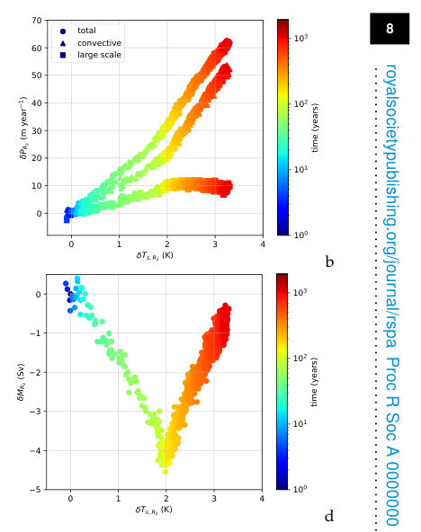
<figcaption class="paper-figure-caption"><b>Fig 1.</b> Figure 1. Scatter plot of ensemble average response of global precipitation (total, convective and large scale) vs</figcaption>
</figure>
<figure class="paper-figure-card">
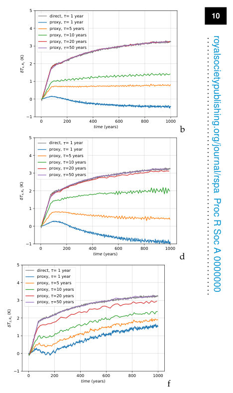
<figcaption class="paper-figure-caption"><b>Fig 2.</b> Figure 2. Global surface temperature response, original direct simulation at one year average (grey) and proxy</figcaption>
</figure>
<figure class="paper-figure-card">
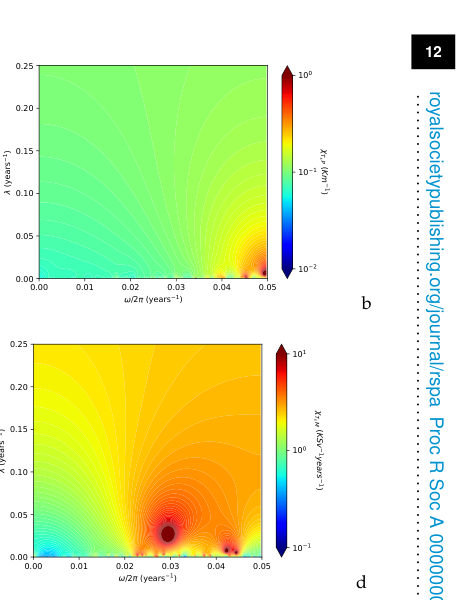
<figcaption class="paper-figure-caption"><b>Fig 3.</b> Figure 3. a) Causality index as function of coarse graining time scale τ, in red (blue) global surface temperature as</figcaption>
</figure>
<figure class="paper-figure-card">
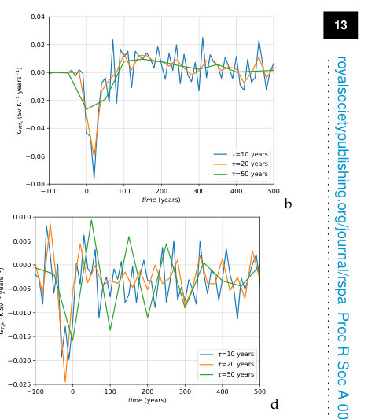
<figcaption class="paper-figure-caption"><b>Fig 4.</b> Figure 4. a) AMOC index response, observed annual averages (grey) and proxy reconstructed using global surface</figcaption>
</figure>
</div>

<p><strong>Summary.</strong> This work establishes a mathematical framework for dynamic emergent constraints in climate science by generalizing linear response theory. It uses proxy Green's functions and causality indices to determine how relationships between observables (like temperature and precipitation) are constrained by the observation time scale. This provides a powerful, mathematically grounded protocol for analyzing complex, non-equilibrium physical systems.</p>
<p><strong>Why it may be interesting.</strong> The rigorous mathematical machinery developed—using linear response theory, Green's functions, and causality indices—is highly transferable to analyzing non-equilibrium dynamics in open quantum systems, such as those involving dissipation or environmental coupling.</p>
<details>
<summary>Detailed structure</summary>
<p><strong>Main problem.</strong> To develop a rigorous mathematical framework for quantifying 'dynamic emergent constraints' between different physical observables in complex systems like the climate, aiming to reduce projection uncertainties.</p>
<p><strong>Main result.</strong> The framework generalizes traditional constraints to 'integral dynamic emergent constraints,' showing that the existence and form of these constraints depend critically on the causality of the system's proxy Green's function and the coarse-graining time scale.</p>
<p><strong>Method.</strong> The study employs linear response theory, utilizing susceptibility ratios and proxy Green's functions derived from climate model simulations to establish integral relationships between observable responses to external forcing.</p>
<p><strong>Model / system.</strong> The analysis is applied to global warming simulations using the MPI-ESM climate model, focusing on observables such as global surface temperature, precipitation, and AMOC intensity.</p>
<p><strong>Key observables.</strong> Global surface temperature (T_s), Precipitation (P), Atlantic Meridional Overturning Circulation (M), and their respective responses ($\delta\Phi$).</p>
<p><strong>Important parameters / regimes.</strong> Coarse-graining time scale ($   au$), which dictates whether the relationship is instantaneous, directional, or reciprocal.</p>
<p><strong>Assumptions / limitations.</strong> The theory relies on the assumption that the system dynamics can be described by a stochastic dynamical system amenable to linear response theory, and that the relationship can be captured by the proxy Green's function.</p>
<p><strong>Figures summary.</strong> Figures illustrate the causality index ($C_{\Phi_1\Phi_2}$) as a function of the time scale $ au$, showing how the predictive power and directionality of constraints change with the observation window.</p>
<p><strong>Paper structure.</strong> The paper builds from defining the problem using linear response theory to generalizing constraints into integral forms. It then applies this theory to climate model data, analyzing how the causality index and proxy Green's functions reveal the dependence of emergent constraints on the coarse-graining time scale $    au$.</p>
</details>
<details>
<summary>Abstract</summary>
<p>Emergent constraints in climate science are empirical relations that link the response to a forcing of a physical observable to the properties of other observables, with the aim of reducing climate change projection uncertainties. Here we use recent results in linear response theory to develop a mathematical framework for dynamic emergent constraints, a class of emergent constraints linking the response of different observables to the same forcing. We show how traditional dynamic emergent constraints are a special case of more general relations, that we call integral dynamic emergent constraints. These relations allow to compute the response of a predictand as the convolution of the response of a predictor and the proxy Green's function of the predictand-predictor pair. The conditions for the existence of integral emergent constraints are related to the causality of the proxy Green's function and the time scales at which the system is observed. We apply this framework to global warming simulations with the MPI-ESM climate model, to study dynamic emergent constraints between different observables. These results allow to put the theory of dynamic emergent constraints on firm mathematical ground, and suggest a protocol to identify necessary conditions for the existence of such relations in climate data.</p>
</details>
<p><sub><a href="#top">↑ back to top</a></sub></p>

<p><a id="paper-2605.30887"></a></p>
<h3 id="activity-enhanced-ordering-in-fluctuation-induced-first-order-transitions"><a href="http://arxiv.org/abs/2605.30887v1">Activity-Enhanced Ordering in Fluctuation-Induced First-Order Transitions</a></h3>
<p><strong>Authors:</strong> Suvendra K. Sahoo<br>
<strong>Type:</strong> theory · <strong>Category:</strong> statistical mechanics · <strong>PDF:</strong> <a href="https://arxiv.org/pdf/2605.30887v1">https://arxiv.org/pdf/2605.30887v1</a><br>
<strong>Analysis basis:</strong> full PDF text, analyzed in chunks
<strong>Topic relevance:</strong> <code>Keldysh / 2PI / non-Gaussian methods</code> <strong>3/5</strong> · <code>driven-dissipative phase transition</code> <strong>3/5</strong> · <code>non-equilibrium universality</code> <strong>3/5</strong> · <code>methods for driven-dissipative</code> <strong>2/5</strong> · <code>non-equilibrium dynamics</code> <strong>2/5</strong> · <code>Frenkel-Kontorova</code> <strong>1/5</strong> · <code>correlated / nonlocal dissipation</code> <strong>1/5</strong></p>
<div class="figure-strip-hint">↔ Scroll figures horizontally</div>
<div class="paper-figures-scroll">
<figure class="paper-figure-card">
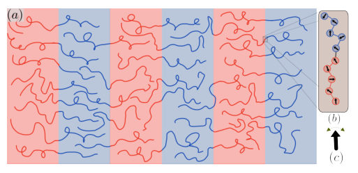
<figcaption class="paper-figure-caption"><b>Fig 1.</b> FIG. 1. (a) Schematic illustration of active diblock copoly- mer with equal length subchains exhibiting microphase sepa- ration, (b) Red and blue segments represent distinct monomer species; interactions between unlike monomers are energeti- cally unfavorable compared to like-like interactions, (c) Each monomer possesses a self-propulsion velocity, with its direc- tion (indicated by arrows) evolving via diffusive dynamics.</figcaption>
</figure>
<figure class="paper-figure-card">
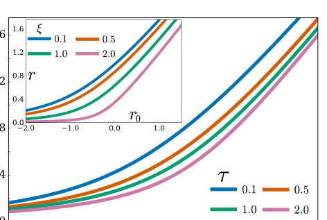
<figcaption class="paper-figure-caption"><b>Fig 2.</b> FIG. 2. Renormalized mass parameter r as a function of r0 for different activity strengths τ. Increasing τ suppresses fluctua- tion corrections, reduces r, and shifts the transition to higher temperatures. The renormalized mass r remains strictly pos- itive, indicating the absence of a spinodal instability. Inset: Dependence on activity ξ.</figcaption>
</figure>
<figure class="paper-figure-card">
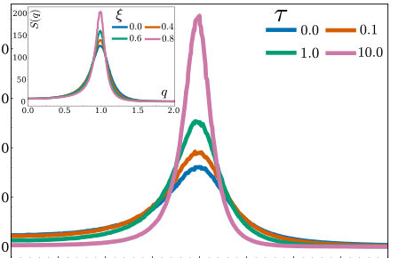
<figcaption class="paper-figure-caption"><b>Fig 3.</b> FIG. 3. Static structure factor S(q) as a function of wave number q for increasing activity τ, showing an enhanced and sharpened dominant peak. Inset: S(q) for increasing ξ. Pa- rameters: r0 = −0.5, u = κ = q0 = 1.0, D = 0.5, ξ = a = 0; τ = 1.0 in the inset.</figcaption>
</figure>
<figure class="paper-figure-card">
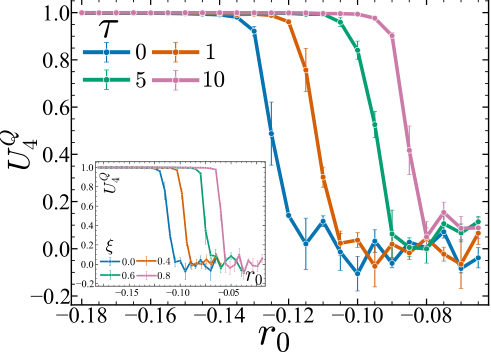
<figcaption class="paper-figure-caption"><b>Fig 4.</b> FIG. 4. Binder cumulant U Q 4 for the isotropic–nematic tran- sition at different activity strengths τ (inset: dependence on ξ). Increasing activity shifts the transition to higher temper- atures, indicating enhanced stability of the nematic phase. Parameters: u = κ = q0 = 1.0, D = 0.02, ξ = a = 0, L = 16π, R = 256; τ = 1.0 in the inset.</figcaption>
</figure>
</div>

<p><strong>Summary.</strong> This work analyzes how active noise modifies fluctuation-driven first-order phase transitions in condensed matter systems. The authors show that increasing activity systematically suppresses the fluctuation corrections, thereby stabilizing the ordered phase at higher temperatures. This establishes activity as a powerful, generic control parameter for tuning the transition strength.</p>
<p><strong>Why it may be interesting.</strong> The study provides a general theoretical framework for understanding how non-equilibrium driving forces (activity) can tune the nature of phase transitions, moving them away from purely equilibrium predictions.</p>
<details>
<summary>Detailed structure</summary>
<p><strong>Main problem.</strong> The paper investigates how introducing activity, modeled by correlated noise, modifies fluctuation-induced first-order phase transitions, particularly those governed by the Brazovskii mechanism.</p>
<p><strong>Main result.</strong> Activity systematically suppresses the fluctuation effects driving the first-order transition, shifting the transition to higher temperatures and enhancing ordering without causing spinodal instability.</p>
<p><strong>Method.</strong> The analysis employs response field formalism, Dyson equations, and functional integral methods to calculate renormalized propagators and effective potentials in the presence of colored noise.</p>
<p><strong>Model / system.</strong> The system is modeled by a scalar order parameter $\phi(x, t)$ governed by a relaxational dynamics equation derived from a Swift–Hohenberg-like free energy functional. Activity is introduced via non-equilibrium, spatiotemporally correlated noise $\zeta(x, t)$.</p>
<p><strong>Key observables.</strong> Renormalized mass parameter ($r$), static structure factor $S(q)$, and the Binder cumulant $U_Q^4$ for the nematic order parameter $Q$.</p>
<p><strong>Important parameters / regimes.</strong> Activity strength (controlled by noise correlation time $   au$ and length $\xi$), and the bare parameters of the free energy functional ($r_0, u, \kappa$).</p>
<p><strong>Assumptions / limitations.</strong> The analysis relies on perturbative expansions (e.g., decoupling interaction terms) and assumes the system dynamics are well-described by the given relaxational equation.</p>
<p><strong>Figures summary.</strong> Figures illustrate the suppression of fluctuation effects (e.g., Fig. 2 showing $r$ vs. $  au$) and the enhancement of ordering, with the Binder cumulant (Fig. 4) confirming the transition shift with activity.</p>
<p><strong>Paper structure.</strong> The paper progresses by first establishing the theoretical framework using response field methods to analyze the effect of activity on the transition character. It then develops the necessary equations of state and compares results across different activity limits ($    au  o 0$ vs. $  au  o \infty$), culminating in numerical simulations confirming the suppression of fluctuations.</p>
</details>
<details>
<summary>Abstract</summary>
<p>Fluctuations can drive otherwise continuous phase transitions to first order through the Brazovskii mechanism. We study how these fluctuation-induced transitions are modified in active systems by introducing nonequilibrium spatiotemporally correlated noise. We show that, while the transition remains fluctuation-induced first order, activity systematically suppresses these fluctuation effects, shifting the transition to higher temperatures and rendering it increasingly weakly first order. As a result, ordering is enhanced without inducing a spinodal instability of the isotropic phase, as confirmed by direct numerical simulations. In the strong-activity limit, fluctuation effects disappear and mean-field behavior is recovered. Our results identify activity as a generic control parameter for tuning the strength of fluctuation-induced first-order transitions.</p>
</details>
<p><sub><a href="#top">↑ back to top</a></sub></p>

<p><a id="paper-2605.30474"></a></p>
<h3 id="mean-squared-displacements-of-rough-particles-in-polydisperse-granular-gases"><a href="http://arxiv.org/abs/2605.30474v1">Mean-squared displacements of rough particles in polydisperse granular gases</a></h3>
<p><strong>Authors:</strong> Anna S. Bodrova<br>
<strong>Type:</strong> theory · <strong>Category:</strong> statistical mechanics · <strong>PDF:</strong> <a href="https://arxiv.org/pdf/2605.30474v1">https://arxiv.org/pdf/2605.30474v1</a><br>
<strong>Analysis basis:</strong> full PDF text, analyzed in chunks
<strong>Topic relevance:</strong> <code>non-equilibrium dynamics</code> <strong>3/5</strong> · <code>non-equilibrium universality</code> <strong>3/5</strong> · <code>Keldysh / 2PI / non-Gaussian methods</code> <strong>2/5</strong> · <code>methods for driven-dissipative</code> <strong>2/5</strong> · <code>Frenkel-Kontorova</code> <strong>1/5</strong> · <code>analog quantum simulation</code> <strong>1/5</strong> · <code>correlated / nonlocal dissipation</code> <strong>1/5</strong> · <code>driven-dissipative phase transition</code> <strong>1/5</strong> · <code>scars &amp; prethermalization</code> <strong>1/5</strong></p>
<div class="figure-strip-hint">↔ Scroll figures horizontally</div>
<div class="paper-figures-scroll">
<figure class="paper-figure-card">
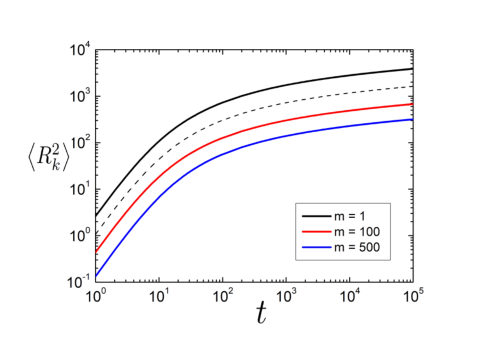
<figcaption class="paper-figure-caption"><b>Fig 1.</b> FIG. 1. Time dependence of partial MSDs (Eq. 29) in a ternary granular mixture. The restitution coefficients ε = 0.5, β = 0.5. The partial number densities of particles are n1 = n2 = n3 = 0.001. The masses of species are m1 = 1, m2 = 100, m3 = 500 the diameters σ1 = 1, σ2 = 1001/3, σ3 = 5001/3. The initial translational granular temperatures are T tr 1 (0) = 1, T tr 2 (0) = 16.6522, T tr 3 (0) = 24.4936, The ini- tial rotational granular temperatures are T rot 1 (0) = 1.39492, T rot 2 (0) = 24.3036, T rot 3 (0) = 42.4045. The black dashed line corresponds to the total MSD R2(t) (Eq. (32)).</figcaption>
</figure>
<figure class="paper-figure-card">
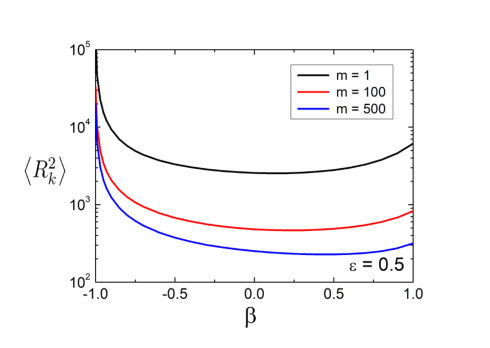
<figcaption class="paper-figure-caption"><b>Fig 2.</b> FIG. 2. Time dependence of partial MSDs R2 k(t) (Eq. 29) in a ternary granular mixture at time t = 10000. The normal restitution coefficient ε = 0.5. The partial number densities of particles are n1 = n2 = n3 = 0.001. The masses of species are m1 = 1, m2 = 100, m3 = 500 the diameters σ1 = 1, σ2 = 1001/3, σ3 = 5001/3.</figcaption>
</figure>
<figure class="paper-figure-card">
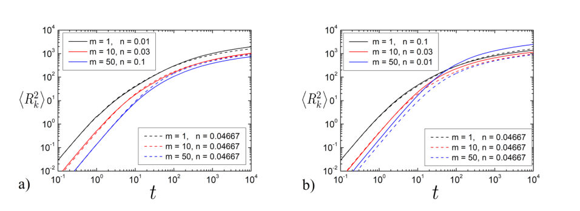
<figcaption class="paper-figure-caption"><b>Fig 3.</b> FIG. 3. Time dependence of partial MSDs (Eq. 29) in a ternary granular mixture. The restitution coefficients are ε = 0.9, β = 0.9. The masses of species are m1 = 1, m2 = 10, m3 = 50 the diameters are equal σ1 = 1, σ2 = 1, σ3 = 1. The total number density is n = 0.14.</figcaption>
</figure>
<figure class="paper-figure-card">
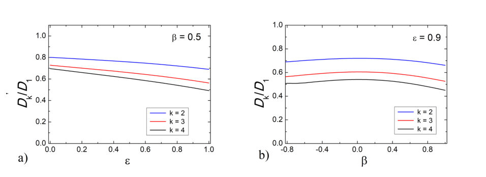
<figcaption class="paper-figure-caption"><b>Fig 4.</b> FIG. 4. The dependence of the ratio of the diffusion coefficients D2/D1, D3/D1, D4/D1 (Eq. 23)) in a mixture of rough granular particles of four different types on the restitution coefficient ε (a) and tangential restitution coefficient β (b). The masses are m1 = 1, m2 = 2, m3 = 3, m4 = 4 the diameters σ1 = 1, σ2 = 21/3, σ3 = 31/3, σ4 = 41/3. The partial number densities of the particles are n1 = n2 = n3 = n4 = 0.1.</figcaption>
</figure>
</div>

<p><strong>Summary.</strong> This theoretical work analyzes the diffusion and mean-squared displacements of rough particles in a granular gas. By incorporating particle roughness via restitution coefficients, the authors show that particle motion is highly sensitive to these mechanical properties. The key finding is the emergence of ultraslow, logarithmic diffusion at long times, providing insights into non-equilibrium transport phenomena.</p>
<p><strong>Why it may be interesting.</strong> While focused on classical granular dynamics, the study of non-equilibrium energy dissipation, cooling laws (Haff's law), and anomalous diffusion ($\log t$ scaling) provides theoretical tools relevant to understanding energy relaxation in complex many-body systems, which has parallels in quantum many-body physics.</p>
<details>
<summary>Detailed structure</summary>
<p><strong>Main problem.</strong> The paper investigates the diffusion coefficients and mean-squared displacements (MSDs) of rough particles within a polydisperse granular gas undergoing a homogeneous cooling state.</p>
<p><strong>Main result.</strong> The MSD exhibits ultraslow motion characterized by a logarithmic time-dependence ($\langle R^2(t) 
angle \propto \log t$) at long times, and the particle motility is strongly influenced by surface roughness.</p>
<p><strong>Method.</strong> The analysis uses kinetic theory approaches, deriving MSDs from velocity correlation functions by solving coupled differential equations for granular temperatures.</p>
<p><strong>Model / system.</strong> The system is a polydisperse granular gas modeled by binary collisions, incorporating particle roughness via normal ($\epsilon$) and tangential ($eta$) restitution coefficients. The dynamics are analyzed in the homogeneous cooling state.</p>
<p><strong>Key observables.</strong> Diffusion coefficients ($D_k(t)$), Mean-Squared Displacements ($\langle \mathbf{R}^2(t) 
angle$), and partial granular temperatures ($T_{tr,k}, T_{rot,k}$).</p>
<p><strong>Important parameters / regimes.</strong> Normal and tangential restitution coefficients ($\epsilon, eta$), particle size/mass polydispersity, and time scales ($ au_0$).</p>
<p><strong>Assumptions / limitations.</strong> The system is assumed to be in a rarefied gas regime dominated by binary collisions, and approximations like the adiabatic limit and molecular chaos hypothesis are employed.</p>
<p><strong>Figures summary.</strong> Figures illustrate the time dependence of partial MSDs for ternary mixtures, showing dependence on parameters like $eta$ and particle mass/density.</p>
<p><strong>Paper structure.</strong> The paper progresses from defining the system dynamics and collision rules to deriving the MSD in terms of velocity correlation functions, applying approximations like the adiabatic limit, and finally presenting the long-time asymptotic behavior of the MSD.</p>
</details>
<details>
<summary>Abstract</summary>
<p>We investigate the diffusion coefficients and mean-squared displacements in a polydisperse granular gas in a homogeneous cooling state by considering the roughness of the particles. We study their dependence on the normal and tangential restitution coefficients. We show that the motility of particles is strongly affected by their mechanical properties and surface characteristics.</p>
</details>
<p><sub><a href="#top">↑ back to top</a></sub></p>

<p><a id="paper-2605.30421"></a></p>
<h3 id="topological-phenomena-protected-by-diabolical-textures"><a href="http://arxiv.org/abs/2605.30421v1">Topological Phenomena Protected by Diabolical Textures</a></h3>
<p><strong>Authors:</strong> Sayantan Mandal, Neelima Pulletikurty, Abhishodh Prakash<br>
<strong>Type:</strong> theory · <strong>Category:</strong> other · <strong>PDF:</strong> <a href="https://arxiv.org/pdf/2605.30421v1">https://arxiv.org/pdf/2605.30421v1</a><br>
<strong>Analysis basis:</strong> full PDF text, analyzed in chunks
<strong>Topic relevance:</strong> <code>analog quantum simulation</code> <strong>3/5</strong> · <code>Keldysh / 2PI / non-Gaussian methods</code> <strong>2/5</strong> · <code>driven-dissipative phase transition</code> <strong>2/5</strong> · <code>entanglement &amp; information structure</code> <strong>2/5</strong> · <code>methods for driven-dissipative</code> <strong>2/5</strong> · <code>non-equilibrium universality</code> <strong>2/5</strong> · <code>non-equilibrium dynamics</code> <strong>1/5</strong></p>
<div class="figure-strip-hint">↔ Scroll figures horizontally</div>
<div class="paper-figures-scroll">
<figure class="paper-figure-card">
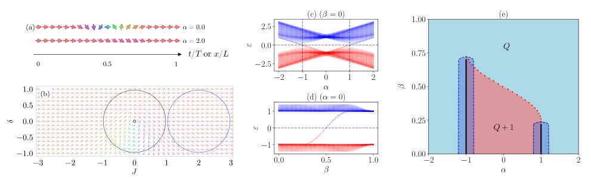
<figcaption class="paper-figure-caption"><b>Fig 1.</b> FIG. 1. (a,b) The Thouless charge pump can be interpreted as a non-trivial temporal texture generated by dynamically encircling the diabolical point of the Rice-Mele model. The texture and the corresponding charge pump is trivial when the diabolical point is not enclosed. (c) These textures can also be embedded in the spatial directions when the ground state carries an extra charge. As the non-trivial texture is eliminated by tuning α in Eq. (4), the spectral gap closes as the charge is expelled at the trap-scaling critical points α = ±1. (d) By tuning β in Eq. (10), the texture and trapped charge can be squeezed into the boundary (for open boundary conditions) or a defect (for periodic...</figcaption>
</figure>
<figure class="paper-figure-card">
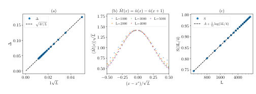
<figcaption class="paper-figure-caption"><b>Fig 2.</b> FIG. 2. Finite size scaling of the spectral gap (a), local ob- servables (b) and von Neumann entanglement entropy for a cut placed at the trapping node (c) at the trap-scaling criti- cal point α∗= −1 in Eq. (4). These compare with the usual forms by replacing the infrared length scale with Lϑ. For our model of free fermions, ϑ = 1/2.</figcaption>
</figure>
<figure class="paper-figure-card">
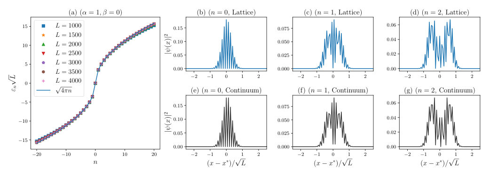
<figcaption class="paper-figure-caption"><b>Fig 3.</b> FIG. 3. Single particle energy levels (a) and eigenfunctions (b-d) of the microscopic model near the Fermi level compared with the continuum energy levels (a) wavefunctions (e-g) in Eqs. (20) and (21) derived from analogy with Dirac Landau levels.</figcaption>
</figure>
</div>

<p><strong>Summary.</strong> This work introduces 'diabolical textures' as a new source of topological phenomena in inhomogeneous quantum systems, modeled using fermions on a lattice. The authors show that these textures create distinct gapped phases separated by unique 'trap-scaling' critical points. By combining continuum field theory with homotopy methods, they establish a general classification scheme for these robust topological features.</p>
<p><strong>Why it may be interesting.</strong> The concept of 'diabolical textures' provides a powerful, geometrically motivated framework for classifying topological phases beyond standard symmetry protection, which is highly relevant for designing novel quantum materials.</p>
<details>
<summary>Detailed structure</summary>
<p><strong>Main problem.</strong> The paper investigates a novel class of topological phenomena arising from the adiabatic spatial variation of quantum states, termed 'diabolical textures,' in inhomogeneous electronic systems.</p>
<p><strong>Main result.</strong> These distinct topological textures lead to gapped states separated by unique 'trap-scaling' critical points, which are stable against weak perturbations and can be systematically classified using homotopy theory.</p>
<p><strong>Method.</strong> The analysis combines continuum field theory (bosonization) with finite-size scaling arguments, mapping the low-energy physics near criticality to a 2D Dirac fermion in a magnetic field.</p>
<p><strong>Model / system.</strong> The primary model is a non-interacting fermion system described by a lattice Hamiltonian, exemplified by the spatially embedded Thouless pump (Rice-Mele model). The theory is generalized to arbitrary spatial dimensions and symmetries.</p>
<p><strong>Key observables.</strong> Spectral gap ($\Delta$), entanglement entropy ($S(b)$), and the critical scaling exponent ($\vartheta$).</p>
<p><strong>Important parameters / regimes.</strong> The parameters defining the texture, such as $\delta$ and $J$, and the critical point characterized by $\alpha^* = \pm 1$.</p>
<p><strong>Assumptions / limitations.</strong> The analysis assumes slow spatial variation of parameters and relies on bosonization techniques near the critical points.</p>
<p><strong>Figures summary.</strong> Figures illustrate the Thouless pump's spatial embedding, the finite-size scaling of the spectral gap ($\Delta \sim L^{-1/2}$), and the comparison of single-particle energy spectra between lattice and continuum descriptions.</p>
<p><strong>Paper structure.</strong> The paper progresses from introducing the physical model (Thouless pump/Rice-Mele), deriving the low-energy continuum theory, establishing the unique trap-scaling critical behavior, and finally generalizing the classification framework using homotopy theory.</p>
</details>
<details>
<summary>Abstract</summary>
<p>We present a new class of topological phenomena in inhomogeneous systems arising from the adiabatic spatial embedding of parametrized families of quantum states such as charge pumps and their generalizations. We demonstrate that each topologically distinct class of these "diabolical textures" gives rise to distinct gapped states that are separated by "trap-scaling" critical points. When the texture varies sufficiently rapidly in space, the critical line terminates abruptly, producing an "unnecessary critical" surface. We demonstrate our results using a microscopic model of non-interacting fermions with a spatially embedded Thouless pump. We study its phase diagram comprehensively and establish its stability to arbitrary perturbations, including interactions, in the vicinity of the critical regions. For systems in arbitrary spatial dimensions and global symmetries, we present a framework to systematically classify diabolical textures using Kitaev's $Ω$ spectrum conjecture.</p>
</details>
<p><sub><a href="#top">↑ back to top</a></sub></p>

<p><a id="paper-2605.31112"></a></p>
<h3 id="functional-methods-for-quantum-thermodynamics"><a href="http://arxiv.org/abs/2605.31112v1">Functional methods for quantum thermodynamics</a></h3>
<p><strong>Authors:</strong> Sibo Wang, Samuel Degen, Haozhao Liang<br>
<strong>Type:</strong> theory · <strong>Category:</strong> statistical mechanics · <strong>PDF:</strong> <a href="https://arxiv.org/pdf/2605.31112v1">https://arxiv.org/pdf/2605.31112v1</a><br>
<strong>Analysis basis:</strong> full PDF text, analyzed in chunks
<strong>Topic relevance:</strong> <code>Keldysh / 2PI / non-Gaussian methods</code> <strong>3/5</strong> · <code>analog quantum simulation</code> <strong>3/5</strong> · <code>methods for driven-dissipative</code> <strong>2/5</strong> · <code>driven-dissipative phase transition</code> <strong>1/5</strong> · <code>entanglement &amp; information structure</code> <strong>1/5</strong> · <code>non-equilibrium dynamics</code> <strong>1/5</strong> · <code>non-equilibrium universality</code> <strong>1/5</strong></p>
<div class="figure-strip-hint">↔ Scroll figures horizontally</div>
<div class="paper-figures-scroll">
<figure class="paper-figure-card">
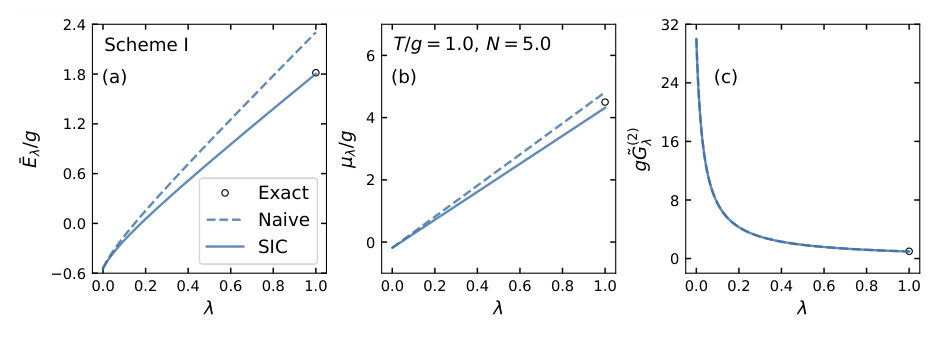
<figcaption class="paper-figure-caption"><b>Fig 1.</b> FIG. 1. Flow evolution for scheme I (minimal closure) at T/g = 1.0 and N = 5.0. Panels (a)–(c) show the running free energy per particle, chemical potential, and connected two-density correlator as functions of λ, respectively. Dashed and solid lines denote the naive and SIC formulations, respectively. The open circle marks the exact result in the fully interacting theory at λ = 1.</figcaption>
</figure>
<figure class="paper-figure-card">
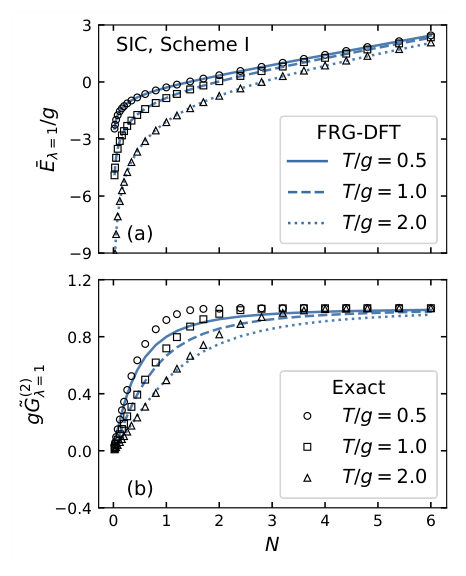
<figcaption class="paper-figure-caption"><b>Fig 2.</b> FIG. 2. Equation of state from scheme I (minimal closure) with SIC at three different temperatures T/g. Panels (a) and (b) show ¯E/g and g ˜G(2), respectively, compared with the exact thermodynamics.</figcaption>
</figure>
<figure class="paper-figure-card">
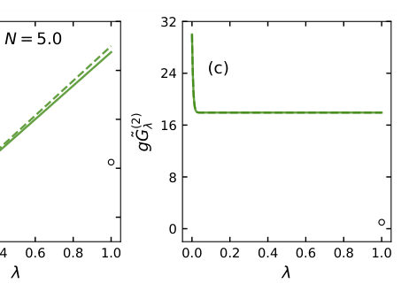
<figcaption class="paper-figure-caption"><b>Fig 3.</b> FIG. 3. The same as Fig. 1, but for the truncation scheme II (frozen closure).</figcaption>
</figure>
<figure class="paper-figure-card">
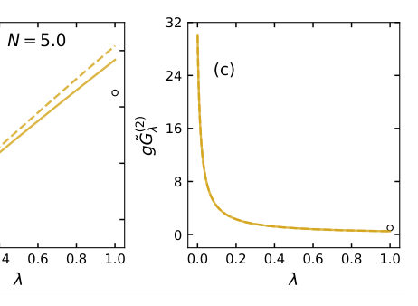
<figcaption class="paper-figure-caption"><b>Fig 4.</b> FIG. 4. The same as Fig. 1, but for the truncation scheme III (effective occupation closure).</figcaption>
</figure>
<figure class="paper-figure-card">
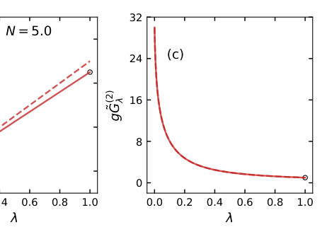
<figcaption class="paper-figure-caption"><b>Fig 5.</b> FIG. 5. The same as Fig. 1, but for the truncation scheme IV (maximum-entropy closure).</figcaption>
</figure>
</div>

<p><strong>Summary.</strong> This work advances Functional Renormalization Group Density Functional Theory (FRG-DFT) to quantum thermodynamics by benchmarking it against the exactly solvable single-site Bose-Hubbard model. The authors identify that a self-interaction correction term is necessary for formal consistency, and they demonstrate that the maximum-entropy closure scheme provides the most accurate description of thermodynamic observables and density correlations. This establishes a controlled foundation for deriving quantum many-body functionals.</p>
<p><strong>Why it may be interesting.</strong> The rigorous development of FRG-DFT provides a powerful, non-perturbative tool for calculating quantum thermodynamic properties, offering a systematic path to derive ab initio functionals applicable across condensed matter, ultracold atoms, and nuclear physics.</p>
<details>
<summary>Detailed structure</summary>
<p><strong>Main problem.</strong> The paper aims to develop a systematic and controllable functional route using Functional Renormalization Group (FRG) to derive energy functionals for quantum many-body systems in the context of quantum thermodynamics.</p>
<p><strong>Main result.</strong> The maximum-entropy closure scheme (Scheme IV) is shown to be the most accurate, successfully reproducing exact thermodynamic quantities and the low-temperature oscillatory structure of density correlators.</p>
<p><strong>Method.</strong> The core method is FRG-DFT, which involves deriving flow equations for the effective action by systematically truncating an infinite hierarchy of equations derived from the imaginary-time path integral.</p>
<p><strong>Model / system.</strong> The primary testbed is the single-site Bose-Hubbard model, which is analytically solvable and allows for rigorous benchmarking against exact finite-temperature thermodynamics.</p>
<p><strong>Key observables.</strong> Free energy, chemical potential, and connected density correlators ($  ilde{G}^{(2)},  ilde{G}^{(3)},  ilde{G}^{(4)}$).</p>
<p><strong>Important parameters / regimes.</strong> Temperature ($T$), interaction strength ($g$), and particle density ($
ho$ or $N$). The low-temperature (strong-coupling) regime is a key diagnostic test.</p>
<p><strong>Assumptions / limitations.</strong> The derivation requires a careful Hubbard-Stratonovich transformation and the inclusion of a Self-Interaction Correction (SIC) term to maintain formal consistency. The analysis relies on comparing results across various closure approximations.</p>
<p><strong>Figures summary.</strong> Figures compare the flow evolution of $    ilde{G}^{(2)}$ and other correlators across different closure schemes (I, II, III, IV), demonstrating that Scheme IV best reproduces exact results, especially the oscillatory structure at low temperatures.</p>
<p><strong>Paper structure.</strong> The paper first establishes the general FRG-DFT formalism, then applies it to the single-site Bose-Hubbard model, deriving the necessary SIC term. It then systematically compares four different truncation/closure schemes (I-IV) by benchmarking their predictions for thermodynamic observables against exact solutions.</p>
</details>
<details>
<summary>Abstract</summary>
<p>The functional renormalization group provides a nonperturbative and systematically improvable route to constructing density functionals for quantum many-body systems from microscopic Hamiltonians. Here we advance this program by benchmarking functional-renormalization-group density functional theory (FRG-DFT) against the exact thermodynamics of the single-site Bose-Hubbard model. This model provides an ideal testing ground because it is analytically solvable, yet remains subtle in the imaginary-time coherent-state path integral, where a naive continuum treatment generates a spurious self-interaction. We show that a careful Hubbard-Stratonovich derivation identifies the self-interaction correction term that must be included in the FRG-DFT flow to recover the exact thermodynamics. We then systematically compare several closures of the resulting hierarchy of flow equations for the free energy, chemical potential, and connected density correlators over broad ranges of density, temperature, and interaction strength. The benchmark shows that the free energy is comparatively robust, whereas the chemical potential and fluctuation observables provide much sharper diagnostics of the hierarchy closure. A maximum-entropy closure gives the most accurate overall description and reproduces even the low-temperature oscillatory structure of the connected two-density correlator. These results identify two general requirements for functional approaches to quantum thermodynamics: the renormalization group flow equation must retain the equal-time contact subtraction to avoid spurious self-interactions, and any closure of the hierarchy must preserve the statistical consistency of density correlators. This work provides a controlled foundation for deriving ab initio density functionals for quantum many-body systems across condensed-matter, ultracold-atom, and nuclear physics, as well as quantum chemistry.</p>
</details>
<p><sub><a href="#top">↑ back to top</a></sub></p>

<p><a id="paper-2605.31233"></a></p>
<h3 id="global-thermodynamics-for-heat-conducting-fluids-under-weak-gravity"><a href="http://arxiv.org/abs/2605.31233v1">Global thermodynamics for heat-conducting fluids under weak gravity</a></h3>
<p><strong>Authors:</strong> Naoko Nakagawa, Shin-ichi Sasa<br>
<strong>Type:</strong> theory · <strong>Category:</strong> statistical mechanics · <strong>PDF:</strong> <a href="https://arxiv.org/pdf/2605.31233v1">https://arxiv.org/pdf/2605.31233v1</a><br>
<strong>Analysis basis:</strong> full PDF text, analyzed in chunks
<strong>Topic relevance:</strong> <code>Keldysh / 2PI / non-Gaussian methods</code> <strong>3/5</strong> · <code>non-equilibrium dynamics</code> <strong>3/5</strong> · <code>driven-dissipative phase transition</code> <strong>2/5</strong> · <code>methods for driven-dissipative</code> <strong>2/5</strong> · <code>non-equilibrium universality</code> <strong>2/5</strong></p>
<div class="figure-strip-hint">↔ Scroll figures horizontally</div>
<div class="paper-figures-scroll">
<figure class="paper-figure-card">
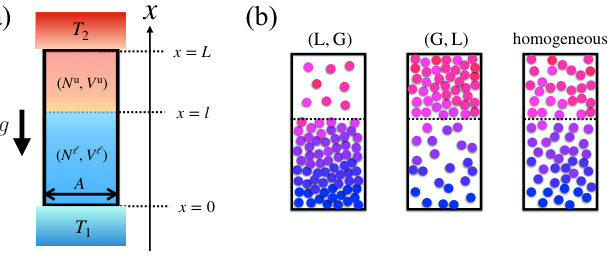
<figcaption class="paper-figure-caption"><b>Fig 1.</b> Fig. 1 (a) System setup under gravity and heat flow. The lower and upper coarse-grained regions are separated by the formal dividing position x = l and are characterized by (N ℓ, V ℓ) and (Nu, V u). In a heterogeneous state, the actual liquid-gas interface is at x = xθ. (b) The three configuration classes: (L, G), (G, L), and homogeneous. In the homogeneous panel, the dashed line indicates only the formal partition, not a macroscopic interface.</figcaption>
</figure>
<figure class="paper-figure-card">
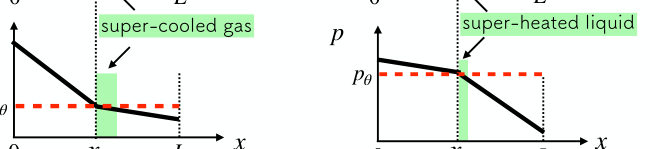
<figcaption class="paper-figure-caption"><b>Fig 2.</b> Fig. 2 Interfacial metastable patterns for T2 &gt; T1. In the lower-free-energy (L, G) branch for geff &gt; 0, θ &lt; Tc(pθ) and the gas adjacent to the interface is supercooled. In the lower-free-energy (G, L) branch for geff &lt; 0, θ &gt; Tc(pθ) and the liquid adjacent to the interface is superheated. The green shaded layers are schematic; reversing the heat-flow direction exchanges the two patterns.</figcaption>
</figure>
<figure class="paper-figure-card">
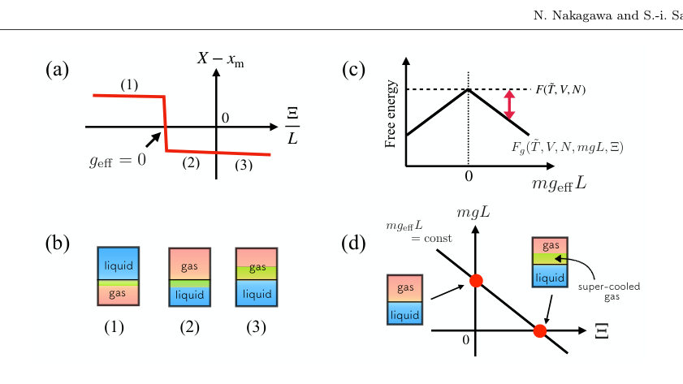
<figcaption class="paper-figure-caption"><b>Fig 3.</b> Fig. 3 Configurational transition reproduced and adapted from Figs. 2(a), 2(b), 3(a), and 3(b) of Ref. [17] under the Creative Commons Attribution 4.0 International license. (a) Center-of-mass displacement under fixed gravity. (b) Representative configurations; light-green regions indicate interfacial metastable layers. (c) Cusp of Fg at geff = 0. (d) Constant-mgeffL lines in the (mgL, Ξ) plane.</figcaption>
</figure>
<figure class="paper-figure-card">
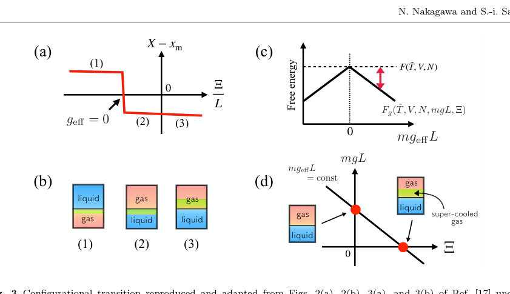
<figcaption class="paper-figure-caption"><b>Fig 4.</b> Figure 3 summarizes the configurational-transition scenario of Ref. [17], now expressed using the stationary values derived above and the equilibrium gravity formulation of Ref. [16]. Figure 3(a) plots the stationary center-of-mass displacement obtained by applying (3.19) with g replaced by geff. Fig- ure 3(b) displays the corresponding phase configurations, using the ordering in (5.15) and the interfacial metastable patterns classified by (5.23) and Fig. 2. The labels (1)–(3) mark the same representative states in panels (a) and (b): state (1) is the minimizing (G, L) configuration, whereas states (2) and (3) are minimizing (L, G) configurations. The light-green layer represents a...</figcaption>
</figure>
<figure class="paper-figure-card">
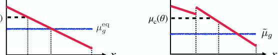
<figcaption class="paper-figure-caption"><b>Fig 5.</b> Fig. 4 Schematic comparison of the chemical-potential profile in (a) equilibrium under gravity and (b) a heat-conducting steady state under gravity. (a) In equilibrium, µ(x) is continuous and linear in x with slope −mg. (b) In heat conduction, shown for (ℓ, u) = (L, G) and Ξ &gt; 0, µ(x) is generally discontinuous at xθ because θ ̸= Tc(pθ). The dashed line indicates µc(θ), and the blue line schematically represents the global chemical potential ˜µg.</figcaption>
</figure>
</div>

<p><strong>Summary.</strong> This paper develops a global thermodynamic framework to analyze liquid-gas coexistence in fluids subjected to both heat conduction and weak gravity. It constructs a variational free-energy function, decomposing it to show that while the effective gravity dictates the primary phase ordering, a residual term is crucial for correctly calculating macroscopic thermodynamic observables. This work provides a general methodology for incorporating non-equilibrium driving forces into phase coexistence theory.</p>
<p><strong>Why it may be interesting.</strong> The rigorous application of global thermodynamics to non-equilibrium systems, particularly separating the ordering principle from residual non-equilibrium corrections, provides a powerful theoretical template for analyzing complex phase transitions in open quantum or classical systems.</p>
<details>
<summary>Detailed structure</summary>
<p><strong>Main problem.</strong> The study investigates the global thermodynamics of liquid-gas coexistence in heat-conducting fluids subjected to weak gravity.</p>
<p><strong>Main result.</strong> The free-energy landscape is decomposed into an effective-gravity part determining the primary phase ordering, and a residual excess-latent-heat contribution necessary for deriving fundamental thermodynamic relations and observables.</p>
<p><strong>Method.</strong> The authors employ a global variational free-energy function approach, extending equilibrium thermodynamics to incorporate non-equilibrium effects from heat conduction and gravity.</p>
<p><strong>Model / system.</strong> The system is a fluid undergoing liquid-gas coexistence in a container under weak gravity and imposed temperature gradients. The analysis uses the van der Waals model for numerical illustration.</p>
<p><strong>Key observables.</strong> Spatially averaged pressure, global chemical potential, and the variational free-energy landscape structure.</p>
<p><strong>Important parameters / regimes.</strong> Weak gravity ($mgL$), temperature difference ($\Xi$), and the dimensionless parameter $\varepsilon$ characterizing the weak coupling regime.</p>
<p><strong>Assumptions / limitations.</strong> The analysis assumes a sharp interface and operates in the linear response regime, neglecting explicit interfacial transport processes.</p>
<p><strong>Figures summary.</strong> Figures illustrate variational free-energy landscapes in $(\xi_1, \xi_2)$ space, showing how temperature differences ($\Xi$) deform the barrier shape and how the ordering changes across different physical regimes.</p>
<p><strong>Paper structure.</strong> The paper builds from setting up the global thermodynamic framework, deriving steady-state conditions via variational minimization, decomposing the free energy into effective-gravity and residual parts, and finally analyzing the resulting free-energy landscape structure.</p>
</details>
<details>
<summary>Abstract</summary>
<p>We study liquid-gas coexistence under gravity and heat conduction from the viewpoint of global thermodynamics. We construct a variational free-energy function for the fixed-global-temperature description and decompose it into two parts. The first has the same configurational form as the equilibrium weak-gravity free energy with gravity replaced by the effective gravity, and it determines the first-order configurational transition between the two separated liquid-gas arrangements. The second is a residual excess-latent-heat contribution that vanishes without heat conduction. Although it does not decide which separated liquid-gas arrangement is thermodynamically favored, this residual part is needed to derive the fundamental relation in the laboratory variables and to recover thermodynamic observables such as the spatially averaged pressure. The same residual contribution reshapes the barrier geometry, ridge/valley structure, and interfacial anomalies of the fixed-global-temperature free-energy landscape. Numerical examples based on the van der Waals model illustrate the resulting landscape structure, and estimates of experimental scales suggest a setup for detecting the effective-gravity inversion.</p>
</details>
<p><sub><a href="#top">↑ back to top</a></sub></p>

<p><a id="paper-2605.31262"></a></p>
<h3 id="non-linear-density-scaling-of-spin-noise-reveals-atomic-correlations-in-warm-vapors"><a href="http://arxiv.org/abs/2605.31262v1">Non-linear density scaling of spin noise reveals atomic correlations in warm vapors</a></h3>
<p><strong>Authors:</strong> Joseph Delpy, Elwyn Cardoz, Adwaith KV, Nikos Fayard, Nadia Belabas, Fabien bretenaker, Fabienne Goldfarb<br>
<strong>Type:</strong> experiment · <strong>Category:</strong> other · <strong>PDF:</strong> <a href="https://arxiv.org/pdf/2605.31262v1">https://arxiv.org/pdf/2605.31262v1</a><br>
<strong>Analysis basis:</strong> full PDF text, analyzed in chunks
<strong>Topic relevance:</strong> <code>exotic spin models in light-matter</code> <strong>3/5</strong> · <code>spintronics-quantum-optics interface</code> <strong>3/5</strong> · <code>analog quantum simulation</code> <strong>2/5</strong> · <code>correlated / nonlocal dissipation</code> <strong>1/5</strong> · <code>entanglement &amp; information structure</code> <strong>1/5</strong> · <code>quantum measurements</code> <strong>1/5</strong> · <code>quantum optics experiment</code> <strong>1/5</strong></p>
<div class="figure-strip-hint">↔ Scroll figures horizontally</div>
<div class="paper-figures-scroll">
<figure class="paper-figure-card">
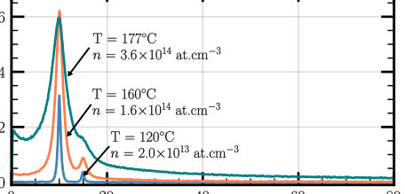
<figcaption class="paper-figure-caption"><b>Fig 1.</b> Figure 2. Experimental spin noise spectra. Examples of spin noise PSD obtained for densities below and above 1014 at.cm−3, for a detuning ∆/2π = +1.5 GHz and a 2 mW input probe power.</figcaption>
</figure>
<figure class="paper-figure-card">
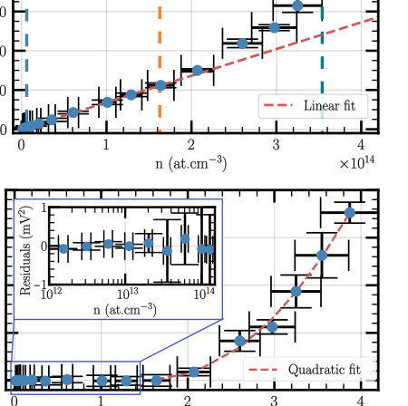
<figcaption class="paper-figure-caption"><b>Fig 2.</b> Figure 3. Evolution of the absolute spin noise vari- ance with vapor density. (a) Evolution of the integrated spin noise variance as a function of atom density for a de- tuning ∆/2π = +1.5 GHz, a 2 mW probe power and 0.4 mW detected power. Red dashed line: linear fit to the data up to n = 1014 at.cm−3. Color dashed lines indicate the cor- responding spin noise PSD in Fig. 2. (b) Residuals from the linear regression, fitted with a quadratic function for n &gt; 1.5 × 1014 at.cm−3 (red dashed line). Inset: close-up view of the low-density data points.</figcaption>
</figure>
<figure class="paper-figure-card">
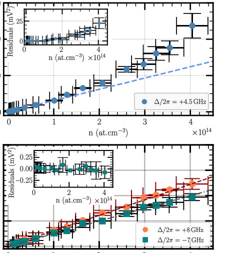
<figcaption class="paper-figure-caption"><b>Fig 3.</b> Figure 4. Dependence of the spin noise scaling on the probe detuning. Evolution of the spin noise vari- ance as a function of vapor density for a detuning of (a) ∆/2π = +4.5 GHz and (b) ∆/2π = −7 GHz (green squares), ∆/2π = 8 GHz (orange dots). Dashed and dash-dotted lines are linear fit to the data for n &lt; 1014 at.cm−3. Insets: resid- uals from linear fits from respective color-coded data.</figcaption>
</figure>
<figure class="paper-figure-card">
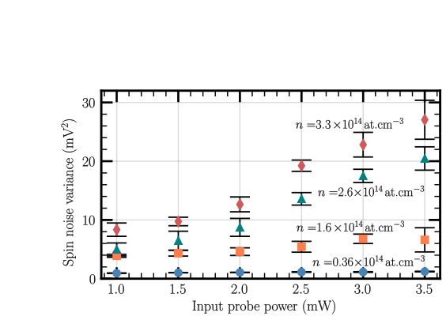
<figcaption class="paper-figure-caption"><b>Fig 4.</b> Figure 5. Evolution of the measured spin noise on the input probe power. Detected spin noise variance as a function of input probe power for different vapor densities. The detected power is fixed to 160 µW for all points, and the detuning is ∆/2π = +1.5 GHz.</figcaption>
</figure>
<figure class="paper-figure-card">
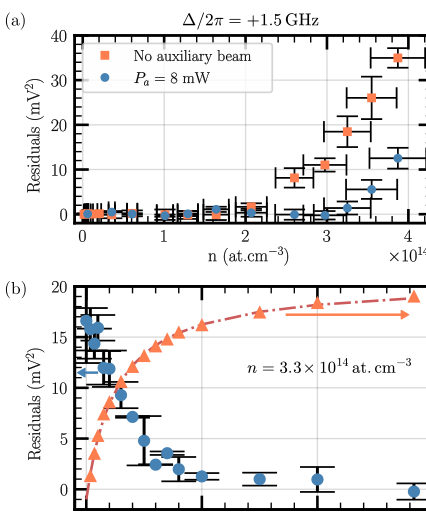
<figcaption class="paper-figure-caption"><b>Fig 5.</b> Figure 6. Impact of the auxiliary beam on the de- tected spin noise variance. (a) Density dependence of the residuals from the low-density linear trend with (blue dots) and without (orange squares) auxiliary beam. Param- eters are Pp = 2 mW, Pd = 0.4 mW and ∆/2π = +1.5 GHz. (b) Blue dots: evolution of the residuals with auxiliary beam power at a fixed density of 3.3 × 1014 at.cm−3. Orange tri- angles: transmission of the auxiliary beam, fitted with a saturated optical depth function (red dash-dotted line).</figcaption>
</figure>
</div>

<p><strong>Summary.</strong> The researchers used high-bandwidth spin noise spectroscopy on warm rubidium vapor to measure how spin noise changes with atomic density. They found a non-linear, quadratic increase in noise at high densities, which they attribute to resonant dipole-dipole interactions between atoms. By experimentally quenching these interactions, they confirmed that this non-linear scaling is indeed a signature of atomic cross-correlations.</p>
<p><strong>Why it may be interesting.</strong> This work provides a direct, measurable spectroscopic signature (non-linear noise scaling) for many-body quantum correlations in a simple, controllable atomic system, extending SNS beyond simple magnetization measurements.</p>
<details>
<summary>Detailed structure</summary>
<p><strong>Main problem.</strong> To experimentally characterize non-linear atomic correlations in warm alkali vapors by measuring the density dependence of spin noise.</p>
<p><strong>Main result.</strong> The spin noise variance exhibits a quadratic, superlinear dependence on atomic density at high concentrations, which is attributed to resonant dipole-dipole interactions (DDI).</p>
<p><strong>Method.</strong> High-bandwidth Spin Noise Spectroscopy (SNS) is employed to measure Faraday rotation fluctuations in a warm rubidium vapor.</p>
<p><strong>Model / system.</strong> The system is a warm alkali vapor (rubidium) probed by a detuned laser, where the noise measurement probes spin correlations arising from resonant dipole-dipole interactions (DDI).</p>
<p><strong>Key observables.</strong> Spin noise variance ($\langle \delta	heta^2 
angle$) and the spin noise power spectral density (PSD).</p>
<p><strong>Important parameters / regimes.</strong> Vapor density ($n$), detuning ($\Delta$), and input probe power ($P_p$).</p>
<p><strong>Assumptions / limitations.</strong> The non-linear scaling is assumed to arise from DDI, which is tested by quenching the interaction using an auxiliary resonant beam.</p>
<p><strong>Figures summary.</strong> Figures show the non-linear (quadratic) scaling of spin noise variance vs. density, and demonstrate the suppression of this non-linearity and spectral distortions when the DDI is quenched.</p>
<p><strong>Paper structure.</strong> The paper establishes the linear regime (non-interacting) and then presents evidence for a superlinear, quadratic scaling at high densities. The core argument is built by introducing and then experimentally suppressing the DDI via an auxiliary beam, confirming the correlation origin.</p>
</details>
<details>
<summary>Abstract</summary>
<p>We experimentally demonstrate a non-linear dependence of the spin noise variance on atomic density in a warm alkali vapor. Implementing high-bandwidth spin noise spectroscopy (SNS) near the D2 transition of rubidium, a quadratic spin noise contribution is shown to arise at high densities, in contrast with the linear dependence valid in non-interacting ensembles. This non-linear scaling is shown to crucially depend on the residual optical excitation of the vapor by the probe beam, suggesting it stems from atomic cross-correlations due to resonant dipole-dipole interaction (DDI) in the vapor. We support this claim by introducing an additional experimental protocol to quench the ddi, resulting in a suppression of both the quadratic scaling of the spin variance and the distortions of the spin noise spectrum induced by the interaction. These results extend the applications of SNS to the characterization of many-body correlations in complex quantum systems.</p>
</details>
<p><sub><a href="#top">↑ back to top</a></sub></p>

<p><a id="paper-2605.31435"></a></p>
<h3 id="can-a-spin-half-particle-ever-give-more-than-two-spots-in-a-stern-gerlach-experiment-the-subtle-physics-of-effective-hamiltonians"><a href="http://arxiv.org/abs/2605.31435v1">Can a spin-half particle ever give more than two spots in a Stern-Gerlach experiment? -- the subtle physics of effective Hamiltonians</a></h3>
<p><strong>Authors:</strong> Noah Linden, Sandu Popescu, Anthony J. Short<br>
<strong>Type:</strong> theory · <strong>Category:</strong> other · <strong>PDF:</strong> <a href="https://arxiv.org/pdf/2605.31435v1">https://arxiv.org/pdf/2605.31435v1</a><br>
<strong>Analysis basis:</strong> full PDF text, analyzed in chunks
<strong>Topic relevance:</strong> <code>analog quantum simulation</code> <strong>3/5</strong> · <code>quantum measurements</code> <strong>2/5</strong> · <code>entanglement &amp; information structure</code> <strong>1/5</strong> · <code>exotic spin models in light-matter</code> <strong>1/5</strong> · <code>measurement-induced transitions</code> <strong>1/5</strong> · <code>spintronics-quantum-optics interface</code> <strong>1/5</strong></p>
<div class="figure-strip-hint">↔ Scroll figures horizontally</div>
<div class="paper-figures-scroll">
<figure class="paper-figure-card">
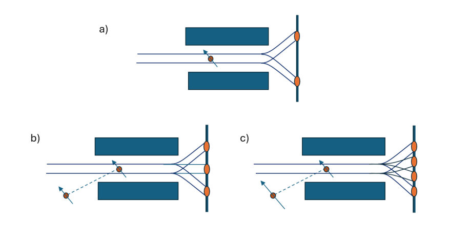
<figcaption class="paper-figure-caption"><b>Fig 1.</b> Figure 1: a) A standard Stern-Gerlach experiment for a spin-half particle. b) The same Stern- Gerlach experiment, but the spin passing through the device interacts with an external spin-half particle which remains outside the device and constrains the spins to be parallel. Note that the outer spots in the second figure are in same positions as in the first figure. c) Similar to figure b), but the spin-half particle inside the device is interacting with a spin-one particle outside.</figcaption>
</figure>
<figure class="paper-figure-card">
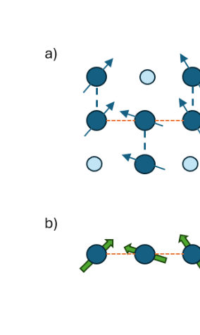
<figcaption class="paper-figure-caption"><b>Fig 2.</b> Figure 2: a) shows a hypothetical three-layer material composed of spin 1</figcaption>
</figure>
</div>

<p><strong>Summary.</strong> This theoretical paper demonstrates that strong coupling between a spin-half particle and another spin can induce an effective spin-$s$ behavior. This allows the particle to yield $2s+1$ distinct outcomes in a Stern-Gerlach measurement, contrary to expectations based on its intrinsic spin. The analysis relies on projecting the system dynamics onto a low-energy subspace defined by the total spin quantum number.</p>
<p><strong>Why it may be interesting.</strong> This work is highly relevant to AMO physics as it explores how strong, engineered interactions (like those in coupled quantum systems or artificial lattices) can induce emergent, higher-dimensional quantum behavior from fundamentally lower-dimensional constituents.</p>
<details>
<summary>Detailed structure</summary>
<p><strong>Main problem.</strong> The paper investigates whether a spin-half particle, when strongly coupled to another spin, can exhibit measurement outcomes in a Stern-Gerlach experiment corresponding to a higher effective spin value.</p>
<p><strong>Main result.</strong> A spin-half particle can effectively behave as if it has a spin-$s$ character, leading to $2s+1$ distinct spots in the Stern-Gerlach measurement, despite its fundamental spin being $1/2$.</p>
<p><strong>Method.</strong> The analysis uses the theory of effective Hamiltonians to approximate the dynamics generated by the full Hamiltonian, particularly in the limit of large energy gaps ($E_0$).</p>
<p><strong>Model / system.</strong> The system involves a spin-half particle coupled to an arbitrary spin ($S_2$) via an interaction Hamiltonian ($H_0$). The measurement is modeled by coupling the system to a spatially varying magnetic field ($V_{	ext{SG}}$).</p>
<p><strong>Key observables.</strong> The number of distinct spots observed in the Stern-Gerlach experiment ($2s+1$), the effective gyromagnetic ratio ($\gamma_{	ext{eff}}^1$), and the trace distance ($\mu(t)$) between state evolutions.</p>
<p><strong>Important parameters / regimes.</strong> The coupling strength ($eta$), the energy scale ($E_0$), and the spatial confinement width ($z_0$) are crucial parameters governing the validity of the approximations.</p>
<p><strong>Assumptions / limitations.</strong> The analysis relies on approximating the evolution using effective Hamiltonians, assuming the coupling is strong enough to keep spins parallel, and that the measurement process can be bounded by a finite region.</p>
<p><strong>Figures summary.</strong> Figure 1 compares standard SG measurements with those involving external spin particles. Figure 2 illustrates a hypothetical three-layer material where strong inter-layer interactions constrain spins, effectively modeling a larger spin system.</p>
<p><strong>Paper structure.</strong> The paper first establishes the problem using the full Hamiltonian, then derives the effective Hamiltonian by projecting onto the total spin subspace ($\Pi_s$). It rigorously proves that the effective operators act like standard spin-$s$ operators, leading to the prediction of multiple spots. Finally, it analyzes the measurement fidelity using state distance metrics.</p>
</details>
<details>
<summary>Abstract</summary>
<p>We show that a spin-1/2 particle can behave as if it were spin-$s$, and generate $2s+1$ spots in a Stern Gerlach measurement (albeit with a smaller gyromagnetic ratio). This arises from some subtle properties of effective Hamiltonians and Hamiltonians with constraints. Examples of implications of the effect in condensed matter are discussed. We also give some simple non-perturbative bounds for a system subjected to strong constraints.</p>
</details>
<p><sub><a href="#top">↑ back to top</a></sub></p>

<p><a id="paper-2605.31168"></a></p>
<h3 id="asymptotic-distinguishability-of-haar-averaged-measurement-models"><a href="http://arxiv.org/abs/2605.31168v1">Asymptotic distinguishability of Haar-averaged measurement models</a></h3>
<p><strong>Authors:</strong> Ludmiła Marcinkowska, Łukasz Pawela, Marcin Markiewicz, Zbigniew Puchała<br>
<strong>Type:</strong> theory · <strong>Category:</strong> quantum information and computing · <strong>PDF:</strong> <a href="https://arxiv.org/pdf/2605.31168v1">https://arxiv.org/pdf/2605.31168v1</a><br>
<strong>Analysis basis:</strong> full PDF text, analyzed in chunks
<strong>Topic relevance:</strong> <code>entanglement &amp; information structure</code> <strong>3/5</strong> · <code>measurement-induced transitions</code> <strong>2/5</strong> · <code>quantum measurements</code> <strong>2/5</strong> · <code>correlated / nonlocal dissipation</code> <strong>1/5</strong></p>
<div class="figure-strip-hint">↔ Scroll figures horizontally</div>
<div class="paper-figures-scroll">
<figure class="paper-figure-card">
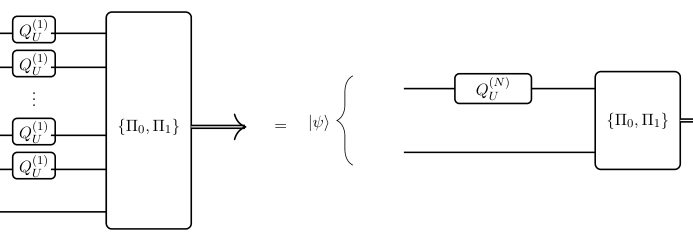
<figcaption class="paper-figure-caption"><b>Fig 1.</b> Figure 1: Discrimination protocol between the identity channel I and the Haar-random measurement channel Q(N) U . The maximally entangled state |ψ⟩is prepared across N subsystems. The channel Q(N) U acts collectively on these subsystems, followed by the joint measurement {Π0, Π1}.</figcaption>
</figure>
<figure class="paper-figure-card">
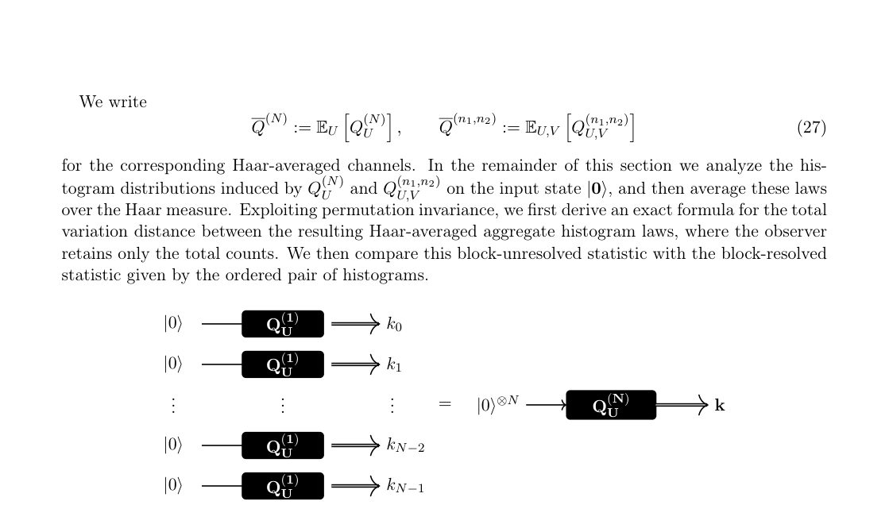
<figcaption class="paper-figure-caption"><b>Fig 2.</b> Figure 2: Equivalent representations of the collective model. The multipartite implementation using N copies of Q(1) U is equivalent to the collective channel Q(N) U acting on the product input state |0⟩⊗N, producing the classical outcome vector k = (k0, . . . , kN−1).</figcaption>
</figure>
<figure class="paper-figure-card">
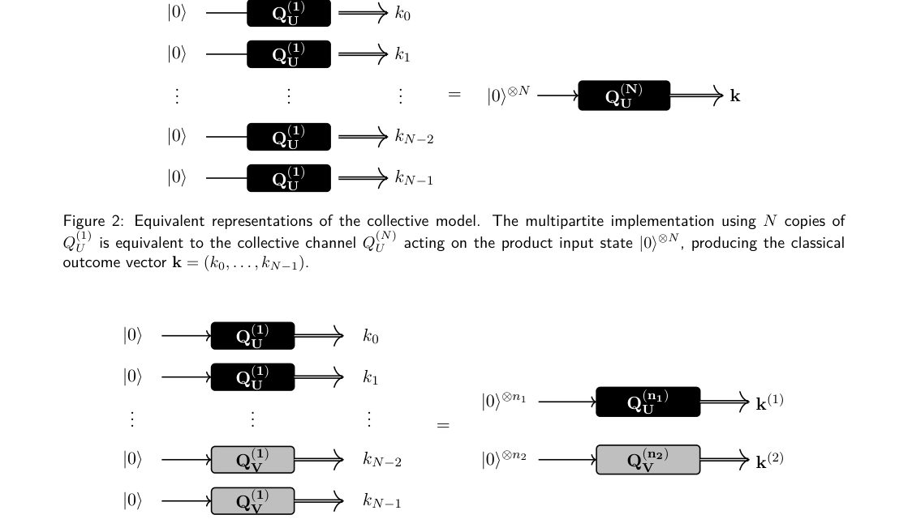
<figcaption class="paper-figure-caption"><b>Fig 3.</b> Figure 3: Equivalent representations of the block model. The multipartite implementation using n1 copies of Q(1) U and n2 copies of Q(1) V is equivalent to two collective channels Q(n1) U and Q(n2) V acting independently on the corresponding subsystems, producing the classical outcome vectors k(1) and k(2). In the aggregate experiment, the observer retains only the total histogram obtained after forgetting the block assignment of the outcomes.</figcaption>
</figure>
<figure class="paper-figure-card">
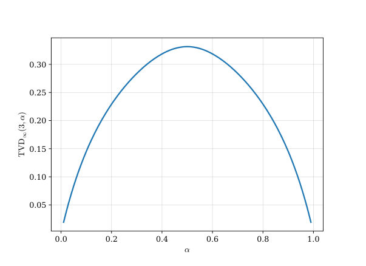
<figcaption class="paper-figure-caption"><b>Fig 4.</b> Figure 4: Limiting aggregate total variation distance between P (N)(λ) and P (n1,n2)(λ), i.e. TVD∞(3, α), as a function of α.</figcaption>
</figure>
<figure class="paper-figure-card">
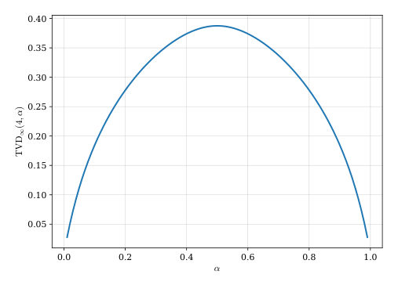
<figcaption class="paper-figure-caption"><b>Fig 5.</b> Figure 5: Limiting aggregate total variation distance between P (N)(λ) and P (n1,n2)(λ), i.e. TVD∞(4, α), as a function of α.</figcaption>
</figure>
</div>

<p><strong>Summary.</strong> This work rigorously analyzes how distinguishable two measurement models are when the underlying randomness is either collective (shared unitary) or local (independent unitaries). By calculating the Total Variation Distance in various asymptotic limits, the authors show that the level of observation—whether aggregate or block-resolved—fundamentally changes the measurable distinguishability.</p>
<p><strong>Why it may be interesting.</strong> The rigorous mathematical tools developed for quantifying distinguishability between structured vs. unstructured quantum processes (shared vs. independent unitaries) are highly relevant for understanding resource quantification in quantum information theory.</p>
<details>
<summary>Detailed structure</summary>
<p><strong>Main problem.</strong> The paper studies the asymptotic distinguishability between measurement models generated by a single collective unitary versus those generated by independent local unitaries.</p>
<p><strong>Main result.</strong> The distinguishability, quantified by the Total Variation Distance (TVD), depends critically on the observation level: the aggregate statistics yield a nontrivial limit, while the block-resolved statistics show perfect distinguishability in certain limits.</p>
<p><strong>Method.</strong> The authors use Weingarten calculus and combinatorial analysis to derive closed-form expressions and asymptotic limits for the TVD in various scaling regimes.</p>
<p><strong>Model / system.</strong> The model involves Haar-random measurement-and-prepare channels acting on a composite system of $N=n_1+n_2$ subsystems of local dimension $d$. The comparison is between the collective channel $Q(N)_U$ and the block-separated channel $Q(n_1, n_2)_{U,V}$.</p>
<p><strong>Key observables.</strong> Type-II error probability, Total Variation Distance (TVD) between aggregate and block-resolved histogram laws, and the block-resolved pair-of-histograms law.</p>
<p><strong>Important parameters / regimes.</strong> The analysis covers multiple asymptotic regimes: fixed-$N$, large-$d$; fixed-$d$, large-$N$; sparse joint-scaling ($N = o(\sqrt{d})$); and critical scaling ($N/\sqrt{d} 	o c$).</p>
<p><strong>Assumptions / limitations.</strong> The analysis distinguishes between the aggregate (block-unresolved) and block-resolved statistics, and relies on asymptotic expansions derived from Haar measure integration.</p>
<p><strong>Figures summary.</strong> Figures illustrate the discrimination protocol using entangled testers and show the relationship between the collective and multipartite measurement models.</p>
<p><strong>Paper structure.</strong> The paper first addresses channel discrimination (Type-II error) and then focuses on comparing the aggregate vs. block-resolved histogram laws using the TVD, deriving specific asymptotic limits for different scaling regimes.</p>
</details>
<details>
<summary>Abstract</summary>
<p>We study discrimination problems generated by the same basic Haar-random measurement mechanism at two observational levels. First, we derive an explicit expression for the type-II error in the task of discriminating a Haar-random measure-and-prepare channel from the identity channel $\mathbb{I}$, using a coherence-sensitive entangled tester. Second, after passing to the induced classical measurement records, we compare two random measurement models: one induced by a single collective unitary of the form $U^{\otimes (n_1+n_2)}$ with $U\in U(d)$, and another induced by independent local unitaries $U_1^{\otimes n_1}\otimes U_2^{\otimes n_2}$. For the associated Haar-averaged aggregate histogram laws, in which the block of origin of each count is not retained, we obtain closed-form formulas and quantify their discrepancy through the total variation distance. We derive asymptotic expressions in the fixed-$N$, large-$d$ regime, the fixed-$d$, large-$N$ regime, the sparse joint-scaling regime $N=o(\sqrt d)$, and the critical scaling regime $N/\sqrt d\to c$. We also identify the block-resolved pair-of-histograms law, showing that the aggregate total variation distance is a coarse-grained lower bound on the distinguishability available when block labels are retained.</p>
</details>
<p><sub><a href="#top">↑ back to top</a></sub></p>

<p><a id="paper-2605.31379"></a></p>
<h3 id="renyi-divergences-and-binary-state-discrimination-error-exponents-for-fermionic-quasi-free-states"><a href="http://arxiv.org/abs/2605.31379v1">Rényi divergences and binary state discrimination error exponents for fermionic quasi-free states</a></h3>
<p><strong>Authors:</strong> Milán Mosonyi, Gábor Maróti-Zareczky<br>
<strong>Type:</strong> theory · <strong>Category:</strong> statistical mechanics · <strong>PDF:</strong> <a href="https://arxiv.org/pdf/2605.31379v1">https://arxiv.org/pdf/2605.31379v1</a><br>
<strong>Analysis basis:</strong> full PDF text, analyzed in chunks
<strong>Topic relevance:</strong> <code>entanglement &amp; information structure</code> <strong>3/5</strong> · <code>Keldysh / 2PI / non-Gaussian methods</code> <strong>2/5</strong> · <code>analog quantum simulation</code> <strong>2/5</strong> · <code>methods for driven-dissipative</code> <strong>1/5</strong></p>
<div class="figure-strip-hint">↔ Scroll figures horizontally</div>
<div class="paper-figures-scroll">
<figure class="paper-figure-card">
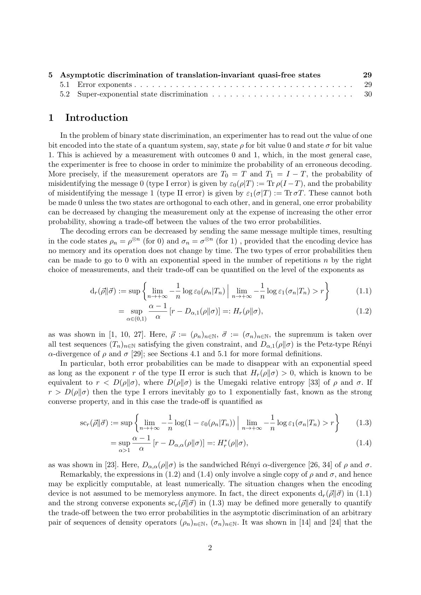
<figcaption class="paper-figure-caption"><b>Fig 1.</b> Low-resolution page preview, page 2</figcaption>
</figure>
<figure class="paper-figure-card">
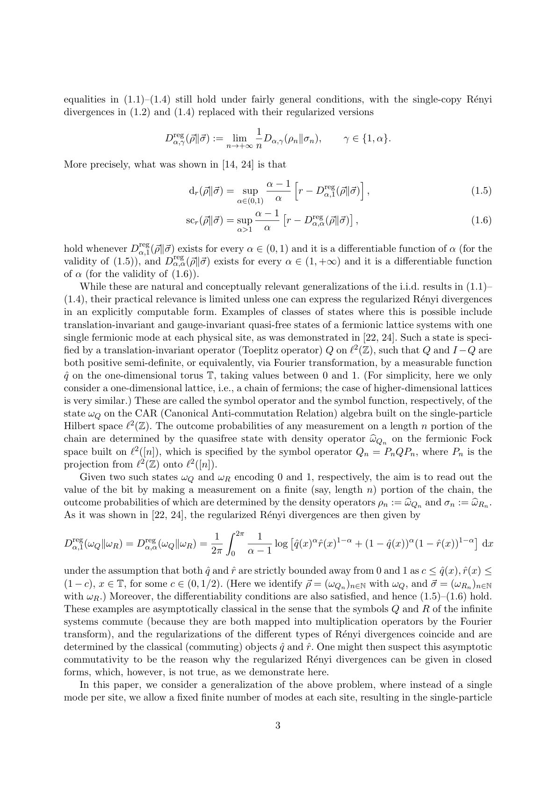
<figcaption class="paper-figure-caption"><b>Fig 2.</b> Low-resolution page preview, page 3</figcaption>
</figure>
<figure class="paper-figure-card">
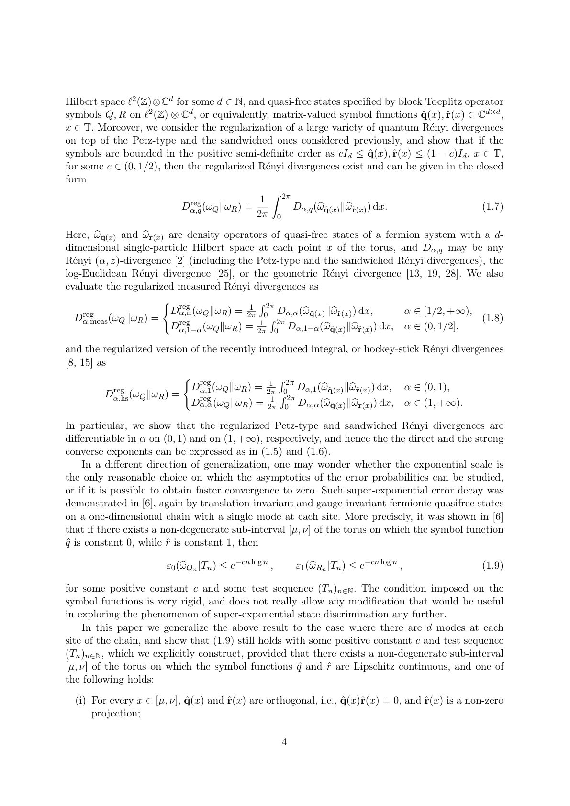
<figcaption class="paper-figure-caption"><b>Fig 3.</b> Low-resolution page preview, page 4</figcaption>
</figure>
<figure class="paper-figure-card">
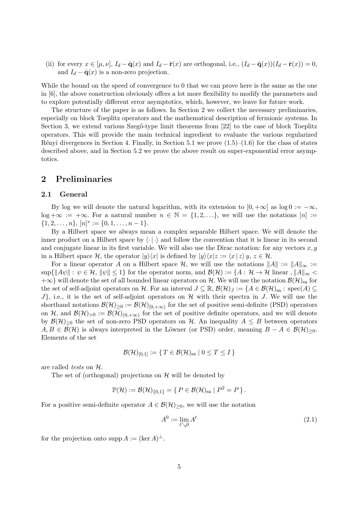
<figcaption class="paper-figure-caption"><b>Fig 4.</b> Low-resolution page preview, page 5</figcaption>
</figure>
<figure class="paper-figure-card">
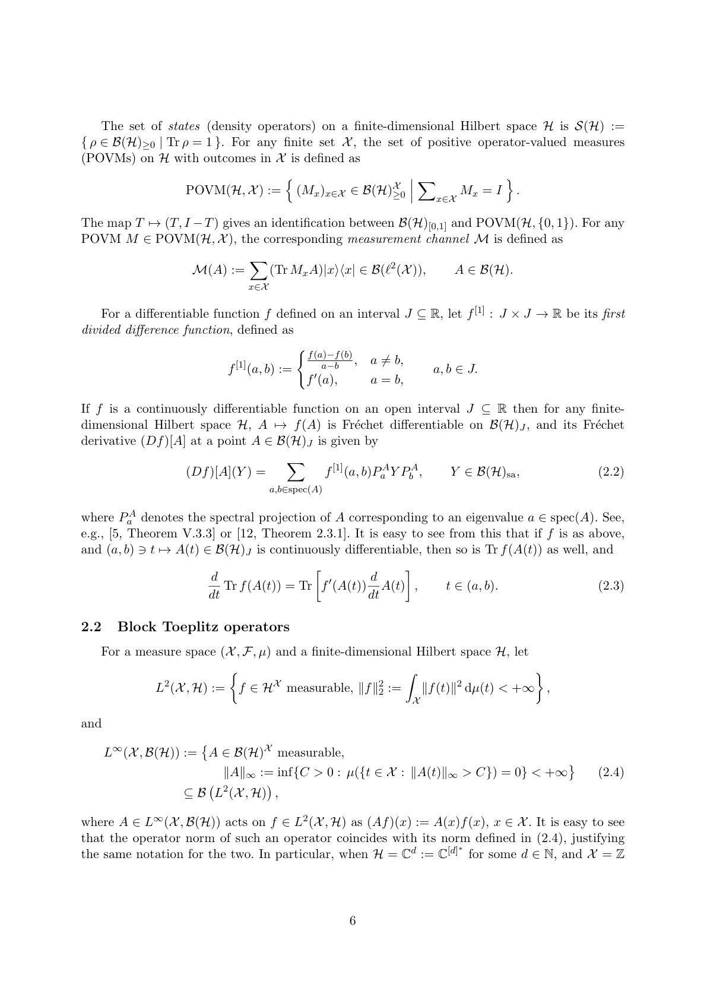
<figcaption class="paper-figure-caption"><b>Fig 5.</b> Low-resolution page preview, page 6</figcaption>
</figure>
</div>

<p><strong>Summary.</strong> This paper develops explicit formulas for various regularized Rényi divergences applicable to fermionic quasi-free states on infinite chains. By relating these divergences to the error exponents in quantum state discrimination, it provides a rigorous mathematical framework for quantifying distinguishability in complex quantum many-body systems.</p>
<p><strong>Why it may be interesting.</strong> The explicit calculation of divergences in the thermodynamic limit for fermionic systems provides powerful tools to analyze quantum correlations and distinguishability in many-body quantum matter models.</p>
<details>
<summary>Detailed structure</summary>
<p><strong>Main problem.</strong> The paper quantifies the trade-off relations between error probabilities in binary quantum state discrimination, particularly for non-i.i.d. settings.</p>
<p><strong>Main result.</strong> It derives explicit, closed-form formulas for various regularized Rényi divergences for a specific class of fermionic quasi-free states, establishing links between these divergences and the achievable error exponents.</p>
<p><strong>Method.</strong> The analysis heavily relies on extending Szegő-type limit theorems from the theory of block Toeplitz operators to calculate the thermodynamic limit of quantum divergences.</p>
<p><strong>Model / system.</strong> The system under study is a doubly infinite fermionic chain modeled by quasi-free states ($\omega_Q, \omega_R$) defined on the CAR-algebra. The states are characterized by single-particle symbols ($\hat{q}, \hat{r}$) acting on the torus.</p>
<p><strong>Key observables.</strong> Error probabilities ($\epsilon_0, \epsilon_1$), error exponents ($d_r, s_r$), and various regularized Rényi divergences ($ ext{D}_{    ext{reg}}^{\alpha, \gamma}$).</p>
<p><strong>Important parameters / regimes.</strong> The R\'enyi parameter $\alpha$, the internal dimension $d$ (number of modes per site), and the spectral properties of the symbols $\hat{q}(x)$ and $\hat{r}(x)$.</p>
<p><strong>Assumptions / limitations.</strong> The derivation requires the symbols $\hat{q}(x)$ and $\hat{r}(x)$ to be bounded away from 0 and 1, and for the symbols to be Lipschitz continuous on a non-degenerate interval.</p>
<p><strong>Paper structure.</strong> The paper builds from defining various Rényi divergences for quasi-free states (using limit theorems) to deriving explicit formulas for regularized divergences, and finally applying these results to establish the asymptotic error exponents for state discrimination.</p>
</details>
<details>
<summary>Abstract</summary>
<p>The trade-off relations between the two types of error probabilities in binary i.i.d. quantum state discrimination can be expressed by single-copy formulas in terms of the Petz-type and the sandwiched Rényi divergences of the two states representing the two hypotheses. In the non-i.i.d. setting, the error exponents can usually be expressed in terms of regularized Rényi divergences, which do not admit explicit formulas in general. Here, we consider a class of states, translation-invariant and gauge-invariant quasifree states on doubly infinite fermionic chains, and give explicit formulas for a wide range of regularized Rényi divergences between such states, including $(α,z)$, log-Euclidean, maximal, measured, and the recently introduced integral Rényi divergences. We show that the case where there is a single mode at each lattice site becomes asymptotically classical, with all the different types of regularized Rényi divergences being equal, while in the case of multiple modes per site, non-commutativity persists under regularization, and for any fixed $α$, the regularized Rényi $(α,z)$-divergences give different regularized values for different $z$ parameters in general. We also generalize a previous construction from [Bunth, Maróti, Mosonyi, Zimborás, Lett.~Math.~Phys.~113:(7), 2023] to the case of multiple modes per lattice site to obtain a large class of states exhibiting super-exponential decay of the discrimination error probabilities.</p>
</details>
<p><sub><a href="#top">↑ back to top</a></sub></p>

<p><a id="paper-2605.31453"></a></p>
<h3 id="solving-models-with-generalized-free-fermions-ii-path-product-expansion-and-conserved-charges"><a href="http://arxiv.org/abs/2605.31453v1">Solving models with generalized free fermions II: Path-product expansion and conserved charges</a></h3>
<p><strong>Authors:</strong> Kohei Fukai, Balázs Pozsgay, István Vona<br>
<strong>Type:</strong> theory · <strong>Category:</strong> statistical mechanics · <strong>PDF:</strong> <a href="https://arxiv.org/pdf/2605.31453v1">https://arxiv.org/pdf/2605.31453v1</a><br>
<strong>Analysis basis:</strong> full PDF text, analyzed in chunks
<strong>Topic relevance:</strong> <code>analog quantum simulation</code> <strong>3/5</strong> · <code>exotic spin models in light-matter</code> <strong>3/5</strong> · <code>entanglement &amp; information structure</code> <strong>1/5</strong> · <code>non-equilibrium dynamics</code> <strong>1/5</strong></p>
<div class="figure-strip-hint">↔ Scroll figures horizontally</div>
<div class="paper-figures-scroll">
<figure class="paper-figure-card">
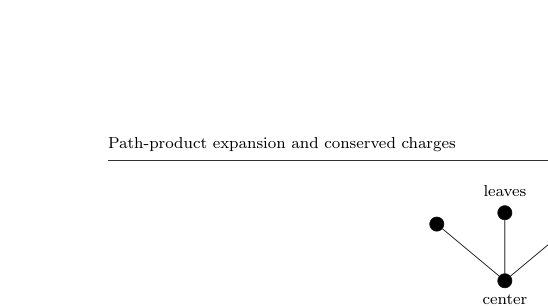
<figcaption class="paper-figure-caption"><b>Fig 1.</b> Fig. 1 The claw graph K1,3, consisting of a center vertex connected to three mutually non-adjacent leaves.</figcaption>
</figure>
<figure class="paper-figure-card">
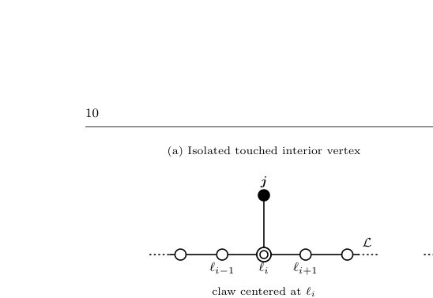
<figcaption class="paper-figure-caption"><b>Fig 2.</b> Fig. 2 The two claw obstructions used in Lemma 3.3. In (a), an interior path vertex ℓi touched by j but not accompanied by either neighboring touched vertex would have three pairwise non-adjacent neighbors ℓi−1, ℓi+1, j. In (b), three touched path vertices no two of which are consecutive along the induced path are pairwise non-adjacent, so they form a claw with center j. The double-circled vertex marks the center of the forbidden claw in each panel. Black dotted path segments indicate omitted continuations of the induced path.</figcaption>
</figure>
<figure class="paper-figure-card">
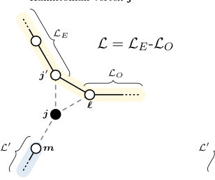
<figcaption class="paper-figure-caption"><b>Fig 3.</b> Fig. 5 The (2, 1) mixed-touch cancellation. The filled vertex is the Hamiltonian vertex of the commutator term: j in panel (a) and j′ in panel (b). Black dotted segments indicate omitted continuations of induced paths. Gray dashed edges indicate touching edges from the Hamiltonian vertex to the packed components. Yellow and blue halos mark the doubly touched side and the singly touched side, respectively. The braces label the path pieces LO, LE, L′, and L′ E used in the decompositions before and after the move. In the left panel the doubly touched component is denoted by L = LE-LO, where LE = L′ E-j′, while the singly touched component is denoted by L′. In the right panel the doubly touched...</figcaption>
</figure>
<figure class="paper-figure-card">
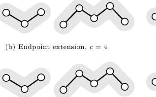
<figcaption class="paper-figure-caption"><b>Fig 4.</b> Fig. 6 Schematic one-component touch with spectators for c = 4. Only packing vertices and the Hamiltonian vertex are drawn; unrelated vertices and edges of the ambient graph are suppressed. The gray and red halos schematically indicate the closed neighborhoods of the spectator components and of the active component, respectively. Distinct halos may themselves overlap, but the packing condition Γ[La] ∩Lb = ∅for a ̸= b requires that no vertex of one packed component lie in the halo of another. Black path edges are the drawn induced paths, and the spectator components are carried along unchanged. The active packed path is drawn inside the red halo, while the filled black vertex is the...</figcaption>
</figure>
<figure class="paper-figure-card">
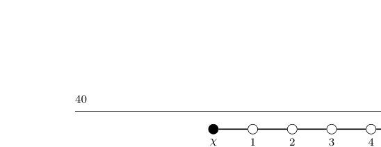
<figcaption class="paper-figure-caption"><b>Fig 5.</b> Fig. 7 Extended frustration graph Gχ for the Ising algebra, shown for the case M = 7. In general, the frustration graph G = PM is the path graph with M = 2L −1 vertices (white), where adjacent vertices correspond to anticommuting generators. The edge vertex χ (black) is connected to the simplicial clique Ks = {1}.</figcaption>
</figure>
</div>

<p><strong>Summary.</strong> This work develops a path-product expansion technique to explicitly determine the hidden free-fermion modes and local conserved charges in quantum spin systems defined on frustration graphs. By utilizing the Krylov basis generating function, the authors establish a direct link between graph structure and integrability, providing a unified framework for understanding conserved quantities in these models.</p>
<p><strong>Why it may be interesting.</strong> The explicit, graph-theoretic construction of conserved charges provides a powerful, general tool for analyzing integrability in complex quantum spin models, applicable beyond standard lattice symmetries.</p>
<details>
<summary>Detailed structure</summary>
<p><strong>Main problem.</strong> To derive an explicit, graph-theoretic structure for the hidden free-fermion modes and local conserved charges in quantum spin systems solvable by free fermions.</p>
<p><strong>Main result.</strong> The free-fermion modes are shown to be expressible as path-product expansions along induced paths, and local conserved charges are determined by path products along induced paths with an odd number of vertices.</p>
<p><strong>Method.</strong> The authors employ a path-product expansion derived from the generating function of the Krylov basis, bypassing the need for the transfer matrix or nonlocal charges.</p>
<p><strong>Model / system.</strong> The study focuses on quantum spin systems defined on a frustration graph, particularly those belonging to the Even-Hole-Free and Claw-Free (ECF) classes. The Hamiltonian is governed by a graph Clifford algebra.</p>
<p><strong>Key observables.</strong> Free-fermion modes, local conserved charges, and infinite-temperature dynamical correlation functions.</p>
<p><strong>Important parameters / regimes.</strong> The structure of the frustration graph (ECF or claw-free); the path length $|L|$ of induced paths.</p>
<p><strong>Assumptions / limitations.</strong> The graph must be ECF for the primary mode derivation, but the charge construction extends to general claw-free graphs.</p>
<p><strong>Figures summary.</strong> Figures illustrate claw obstructions and the structure of the extended frustration graph ($G_\chi$) used in the path-product expansion.</p>
<p><strong>Paper structure.</strong> The paper develops the framework by first introducing the graph-Clifford algebra, then deriving the path-product expansion for the free-fermion modes using the Krylov basis generating function, and finally applying this to derive explicit local and generalized conserved charges.</p>
</details>
<details>
<summary>Abstract</summary>
<p>Free-fermion solvability in quantum spin systems is increasingly understood to be governed by a graph Clifford algebra defined from the frustration graph of the Hamiltonian. When the frustration graph belongs to certain classes, such as the even-hole-free and claw-free (ECF) class, the Hamiltonian is solvable by hidden free fermions: it admits a free-fermion solution although it does not reduce to a Majorana bilinear under the Jordan-Wigner transformation. However, unlike in the Jordan-Wigner case, where each mode is a linear combination of single Majorana fermions, the explicit operator structure of the hidden free-fermion modes -- and that of the local conserved charges -- has remained obscure. In this work, we derive a path-product expansion that expresses each free-fermion mode as a linear combination of path products along induced paths in the extended frustration graph. The expansion is obtained from the generating function of the Krylov basis and yields the modes directly, without using the transfer matrix or the nonlocal conserved charges as input. As an application, the mode decomposition computes infinite-temperature dynamical correlation functions for arbitrary ECF frustration graphs. We further obtain explicit expressions for local conserved charges as linear combinations of path products along induced paths; these charges apply beyond the free-fermion (ECF) class to more general claw-free frustration graphs. We also identify a unified family of generalized conserved charges that contains both the previously known nonlocal conserved charges and these local conserved charges as special cases. For Fendley's original FFD chain with homogeneous couplings and periodic boundary conditions, in a suitable basis, the structure of these local conserved charges exhibits the same Catalan-tree pattern as in the spin-$1/2$ XXX chain.</p>
</details>
<p><sub><a href="#top">↑ back to top</a></sub></p>

<p><a id="paper-2605.30986"></a></p>
<h3 id="dimensionality-of-a-strongly-interacting-2d-3d-fermi-fermi-mixture-from-the-perspective-of-superfluid-instability-and-excitation-properties"><a href="http://arxiv.org/abs/2605.30986v1">Dimensionality of a strongly interacting 2D-3D Fermi-Fermi mixture from the perspective of superfluid instability and excitation properties</a></h3>
<p><strong>Authors:</strong> Haruka Takeda, Saki Hirai, Shumpei Iwasaki, Yoji Ohashi<br>
<strong>Type:</strong> theory · <strong>Category:</strong> quantum gases · <strong>PDF:</strong> <a href="https://arxiv.org/pdf/2605.30986v1">https://arxiv.org/pdf/2605.30986v1</a><br>
<strong>Analysis basis:</strong> full PDF text, analyzed in chunks
<strong>Topic relevance:</strong> <code>Keldysh / 2PI / non-Gaussian methods</code> <strong>3/5</strong> · <code>analog quantum simulation</code> <strong>3/5</strong> · <code>methods for driven-dissipative</code> <strong>1/5</strong></p>
<div class="figure-strip-hint">↔ Scroll figures horizontally</div>
<div class="paper-figures-scroll">
<figure class="paper-figure-card">
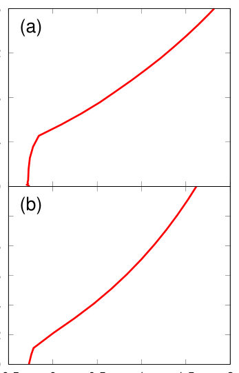
<figcaption class="paper-figure-caption"><b>Fig 1.</b> FIG. 1. Mean-field BCS results for (a) superfluid order pa- rameter ∆at T = 0, and (b) superfluid phase transition tem- perature Tc, in a two-component 2D-3D Fermi-Fermi mixture with an s-wave pairing interaction. ǫF = k2 F/(2m) and kF is given in Eq. (5), where m is an atomic mass. aefff is the effective s-wave scattering length in Eq. (4). We have used the mean-field theory in Ref. [31] to obtain these results, and the outline of this theory is explained in Appendix A.</figcaption>
</figure>
<figure class="paper-figure-card">
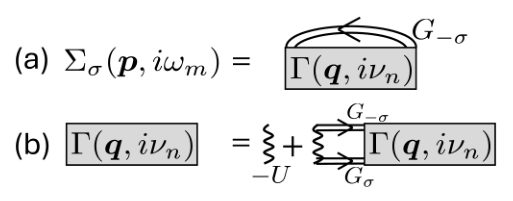
<figcaption class="paper-figure-caption"><b>Fig 2.</b> FIG. 3. (a) SCTMA self-energy Σσ(p, iωm) in Eq. (7). The double solid line is the dressed Green’s function Gσ in Eq. (6). (b) Scattering matrix Γ(q, iνn) in Eq. (8). The wavy line de- scribes the paring interaction −U. In this figure, pseudospin −σ represents the opposite spin component to σ = ↑, ↓.</figcaption>
</figure>
<figure class="paper-figure-card">
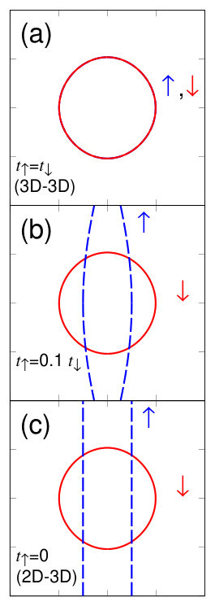
<figcaption class="paper-figure-caption"><b>Fig 3.</b> FIG. 2. Difference of Fermi surfaces between spin-↑(dashed line) and spin-↓(solid line) components in a non-interacting mixed-dimensional Fermi gas with the kinetic energy in Eq. (3). p⊥and pz denote the momentum in the in-plane direction and the inter-layer direction, respectively. We set N↑= N↓= 1/(6π2d3 z).</figcaption>
</figure>
<figure class="paper-figure-card">

<figcaption class="paper-figure-caption"><b>Fig 4.</b> FIG. 4. Calculated BCS-type superfluid phase transition temperature Tc in SCTMA, as a function of the interaction strength (kFaeff)−1 and the hopping parameter t↑. In this fig- ure, 3D-3D and 2D-3D cases are, respectively, realized when t↑/ǫF = 1 and 0.</figcaption>
</figure>
<figure class="paper-figure-card">

<figcaption class="paper-figure-caption"><b>Fig 5.</b> FIG. 5. Comparison of the calculated Tc in SCTMA with TBEC obtained from Eq. (23). (a) Tc and TBEC as functions of t↑/ǫF in the strong-coupling regime when (kFaeff)−1 = 6. (b) Interaction dependence in the 3D-3D case (t↑/ǫF = t↓/ǫF = 1).</figcaption>
</figure>
</div>

<p><strong>Summary.</strong> This theoretical study examines how superfluidity behaves in a Fermi gas whose dimensionality is tuned between 3D-3D and 2D-3D. Using advanced many-body techniques, the authors find that pairing fluctuations suppress the critical temperature to zero in the 2D-3D limit. Crucially, they show that while the superfluid instability is dominated by the 2D component, the precursor pseudogap retains a 3D character, highlighting the observable dependence on dimensionality.</p>
<p><strong>Why it may be interesting.</strong> This work provides detailed insights into how dimensionality fundamentally alters superfluidity and pairing mechanisms in ultracold atomic gases, distinguishing between mean-field predictions and fluctuation-dominated regimes.</p>
<details>
<summary>Detailed structure</summary>
<p><strong>Main problem.</strong> The study investigates the strong-coupling properties and superfluid instability of an attractively interacting Fermi-Fermi mixture as its dimensionality is tuned from 3D-3D to 2D-3D.</p>
<p><strong>Main result.</strong> Pairing fluctuations suppress the superfluid transition temperature ($T_c$) to zero in the 2D-3D limit, which is governed by the lower-dimensional component. However, the pseudogap phenomenon retains a 3D character.</p>
<p><strong>Method.</strong> The analysis employs the Self-Consistent T-matrix Approximation (SCTMA) and Generalized Random Phase Approximation (GRPA) to calculate superfluid properties and excitation spectra.</p>
<p><strong>Model / system.</strong> The system is a two-component Fermi atomic gas with tunable s-wave pairing interaction, loaded in a mixed-dimensionality trap (2D in-plane, 3D along z).</p>
<p><strong>Key observables.</strong> Superfluid transition temperature ($T_c$), superfluid order parameter ($\Delta$), Goldstone mode velocity ($\mathbf{v}_\varphi$), and single-particle spectral weight ($A_\sigma$).</p>
<p><strong>Important parameters / regimes.</strong> Interaction strength ($U$), dimensional imbalance (2D-3D limit), and the pairing interaction strength.</p>
<p><strong>Assumptions / limitations.</strong> The use of SCTMA is crucial for including pairing fluctuations, and the analysis relies on the Thouless criterion for determining $T_c$.</p>
<p><strong>Figures summary.</strong> Figures illustrate the $T_c$ dependence, the vanishing $v_{\phi,z}$ component of the Goldstone mode velocity in the 2D-3D limit, and the pseudogap structure in the single-particle density of states.</p>
<p><strong>Paper structure.</strong> The paper progresses by first establishing the theoretical framework using SCTMA, then analyzing the superfluid instability via $T_c$ calculations, and finally examining the single-particle excitation spectrum, particularly the pseudogap, in the mixed-dimensional limit.</p>
</details>
<details>
<summary>Abstract</summary>
<p>We theoretically investigate strong-coupling properties of an attractively interacting Fermi atomic gas, where the Cooper-pair formation occurs between atoms belonging to different dimensional bands. Including pairing fluctuations within the framework of the self-consistent $T$-matrix approximation (SCTMA), we examine how the BCS-type superfluid phase transition temperature $T_\mathrm{c}$ varies as one moves from the 3D-3D to the 2D-3D system, in the wide parameter region with respect to the strength of the pairing interaction. In the 2D-3D limit, we find that, while the mean-field BCS theory predicts $T_\mathrm{c}>0$ in the strong-coupling regime, $T_\mathrm{c}$ is remarkably suppressed down to zero by pairing fluctuations that are strongly enhanced by the mixed-dimensionality of the system. As the origin of this, we clarify that the lower-dimensional (2D) component dominates the superfluid instability, so that the vanishing $T_\mathrm{c}$ is the same phenomenon as that in the 2D-2D case. We also point out that this can already be seen in the mean-field level, when one examines the propagation of the Goldstone mode. On the other hand, we find that the pseudogap phenomenon, which is known as a precursor of Cooper-pair formation, exhibits a 3D character of the 2D-3D system. These results indicate that the dimensionality of a strongly interacting Fermi gas depends on what we observe.</p>
</details>
<p><sub><a href="#top">↑ back to top</a></sub></p>

<p><a id="paper-2605.30425"></a></p>
<h3 id="dually-tunable-ybco-coplanar-waveguide-resonators-based-on-helium-ion-generated-josephson-inductances"><a href="http://arxiv.org/abs/2605.30425v1">Dually tunable YBCO coplanar waveguide resonators based on helium-ion-generated Josephson inductances</a></h3>
<p><strong>Authors:</strong> Kenny Fohmann, Timo J. Glebe-Märklin, Benedikt Wilde, Mohamad Kazouini, Christoph Schmid, Dieter Koelle, Reinhold Kleiner, Daniel Bothner<br>
<strong>Type:</strong> experiment · <strong>Category:</strong> strongly correlated electrons · <strong>PDF:</strong> <a href="https://arxiv.org/pdf/2605.30425v1">https://arxiv.org/pdf/2605.30425v1</a><br>
<strong>Analysis basis:</strong> full PDF text, analyzed in chunks
<strong>Topic relevance:</strong> <code>QC/QI experiment</code> <strong>3/5</strong> · <code>analog quantum simulation</code> <strong>2/5</strong> · <code>correlated cavity matter</code> <strong>1/5</strong> · <code>driven-dissipative phase transition</code> <strong>1/5</strong></p>
<div class="figure-strip-hint">↔ Scroll figures horizontally</div>
<div class="paper-figures-scroll">
<figure class="paper-figure-card">

<figcaption class="paper-figure-caption"><b>Fig 1.</b> Fig. 1: YBCO coplanar waveguide cavities for integration with helium-ion-generated Josephson inductances. (a) Schematic of a quarter-wave coplanar waveguide (CPW) cavity as used in this work (not to scale), capacitively side-coupled to a CPW transmission line. The substrate material is MgO, the superconducting film is 50 nm thick M-type YBCO. For capacitive coupling to the feedline, the cavity has a coupling elbow near its open end. Close to its shorted end far from the feedline, the cavity contains a loop in the CPW center conductor for the SQUID. Characterization is performed by measurements of the scattering matrix element 𝑆21 = 𝑆out/𝑆in. (b) False-color optical microscopy image around...</figcaption>
</figure>
<figure class="paper-figure-card">

<figcaption class="paper-figure-caption"><b>Fig 2.</b> Fig. 2: Transport characteristics and critical-current ion-dose dependence of M-type YBCO He-bJJs. (a) IVC of a He-FIB bJJ with an ion line dose of 𝐷𝓁= 1000 ions/nm. Critical current is 𝐼c ≈9.5 µA. Top-left inset shows a schematic of the four-terminal IV measurement. Bottom-right inset shows a false-color optical image of the 𝑎dc = 2.5 µm wide bridge structures used for these experi- ments, depicting one set of three parallel bridges that are connected to a common ground but biased and measured individually. (b) Crit- ical junction current 𝐼c vs applied magnetic field 𝐵ext for the junction of panel (a). Inset schematically shows the application of 𝐵ext per- pendicular to the chip surface,...</figcaption>
</figure>
<figure class="paper-figure-card">

<figcaption class="paper-figure-caption"><b>Fig 3.</b> Fig. 3: Flux-tuning of a helium-ion-generated YBCO SQUID-cavity and parameters of the integrated Josephson junctions. (a) Transmission |𝑆21| around the resonance frequency of R1 without (light blue) and with (purple, pink, red, orange) He-bJJs for different values of bias flux Φb through the SQUID. Introducing the junctions shifts the resonance frequency from 𝜔c = 2𝜋×4.869 GHz to 𝜔0 = 2𝜋×4.705 GHz, mainly due to the additional inductance of the JJs. When a magnetic field perpendicular to the chip surface is applied, equivalent to a bias magnetic flux Φb through the SQUID, the resonance dip shifts further to lower values, here down to 𝜔0 = 2𝜋× 4.39 GHz at Φb/Φ0 ∼0.48. Symbols are data, black...</figcaption>
</figure>
<figure class="paper-figure-card">

<figcaption class="paper-figure-caption"><b>Fig 4.</b> Fig. 4: Single-bJJ Fraunhofer-diffraction decouples resonance frequency from flux responsivity and allows modeling losses. (a) Gray-scale-coded transmission |𝑆21| vs VNA probe frequency (covering the resonance frequencies of all three cavities) and vs bias flux coupling into the SQUID of R1. Beyond a few flux quanta Φ0, all three modes show a Fraunhofer-like modulation of their resonance frequencies enveloping the periodic modulations of the SQUIDs, which are still clearly visible over the complete field range, even around the Fraunhofer minima or at the first side-maxima, cf. the three zoom windows. Note here that the zoom window for R2 reveals skewed flux arcs, a signature for Josephson...</figcaption>
</figure>
<figure class="paper-figure-card">

<figcaption class="paper-figure-caption"><b>Fig 5.</b> Fig. 5: Operating flux-tunable YBCO SQUID cavities between 2.1 K and 14 K. (a) Flux-tuning arcs of the resonance frequency 𝜔0 of R1 at three different sample temperatures 𝑇s = 2.1 K, 10 K and 14 K, plotted in purple, red, and orange, respectively. With increasing temperature, the sweetspot resonance frequency decreases, and the tuning range increases from 𝜔00 −𝜔min ∼2𝜋× 240 MHz at 2.1 K to ∼2𝜋× 320 MHz at 14 K. Circles are experimental data, lines are fit curves considering potentially different critical currents of the two bJJs in the SQUID, i.e., an asymmetric SQUID. (b) Critical currents 𝐼1, 𝐼2 of the two bJJs in the SQUID vs 𝑇s obtained from the arc fits in panel (a). Top-filled symbols...</figcaption>
</figure>
</div>

<p><strong>Summary.</strong> This paper reports on the creation and characterization of highly tunable superconducting microwave resonators using YBCO thin films and Josephson junctions formed by helium ion irradiation. The key achievement is demonstrating that the resonators exhibit both periodic SQUID oscillations and a superimposed Fraunhofer-like modulation, allowing for independent control over resonance frequency and magnetic flux responsivity. This paves the way for advanced quantum sensing and circuit applications at elevated temperatures.</p>
<p><strong>Why it may be interesting.</strong> The work directly addresses superconducting circuits using high-temperature superconductors (YBCO), which are central to the study of strongly correlated electron systems, and integrates quantum circuit elements (SQUIDs) into a measurable microwave platform.</p>
<details>
<summary>Detailed structure</summary>
<p><strong>Main problem.</strong> The primary goal is to develop a flexible and reliable platform for superconducting microwave circuits capable of operating in high-magnetic-field and high-temperature regimes.</p>
<p><strong>Main result.</strong> The authors successfully demonstrated strongly flux-tunable microwave resonators using YBCO coplanar waveguides integrated with helium-ion-generated Josephson junctions, exhibiting Fraunhofer-like modulation.</p>
<p><strong>Method.</strong> The study involves fabricating YBCO CPW cavities, generating Josephson junctions via focused helium ion beam irradiation, and characterizing the resulting SQUID-resonator system using a Vector Network Analyzer (VNA) under applied magnetic flux.</p>
<p><strong>Model / system.</strong> The physical system is a coplanar waveguide resonator made of YBCO, incorporating Josephson junctions (bJJs) forming SQUID loops. The analysis models the resonance frequency ($\omega_0$) and losses ($1/Q_{J0}$) as functions of the applied magnetic flux ($\Phi_b$) and temperature ($T_s$).</p>
<p><strong>Key observables.</strong> Resonance frequency ($\omega_0$), linewidths ($\kappa$), critical junction current ($I_c$), and the Fraunhofer-like modulation envelope.</p>
<p><strong>Important parameters / regimes.</strong> Operating temperatures up to 14 K; flux quantum ($\Phi_0$); ion dose ($D_{\ell}$); and the junction resistance ($R_J$).</p>
<p><strong>Assumptions / limitations.</strong> The analysis relies on fitting the data to established SQUID and Josephson junction models, though limitations regarding the simple model for $1/Q_{J0}$ are noted.</p>
<p><strong>Figures summary.</strong> Figures illustrate the SQUID flux-tuning curves showing periodic oscillations, overlaid with a broader Fraunhofer-like modulation envelope, and also show the temperature dependence of these characteristics.</p>
<p><strong>Paper structure.</strong> The paper progresses from initial characterization of the YBCO platform and junction formation (dose dependence) to measuring the fundamental SQUID flux-tuning response, and finally analyzing the complex interplay between the periodic SQUID modulation and the superimposed Fraunhofer envelope, including temperature studies.</p>
</details>
<details>
<summary>Abstract</summary>
<p>Superconducting microwave circuits with and without Josephson inductances are the Swiss Army knife for many experiments and technologies from quantum information science to astrophysical particle detectors. Despite a large variety of existing circuit types, thin film materials and Josephson junction technologies, a flexible and reliable platform for high-magnetic-field and high-temperature applications is yet to be found. In this manuscript, we investigate coplanar waveguide cavities made of the high-temperature cuprate superconductor YBa$_2$Cu$_3$O$_7$ (YBCO), integrated with Josephson inductances and quantum interferometers that are generated by the controlled local irradiation of the YBCO with a focused helium ion beam. We obtain strongly flux-tunable microwave resonators, which not only display periodic interferometer oscillations of resonance frequency and decay rate, but also a superimposed Fraunhofer-like modulation pattern. The latter originates from the magnetic field tuning of the individual Josephson junction critical currents due to the out-of-plane junction barriers. It allows adjusting resonance frequency and flux responsivity independently of each other, potentially enabling tunable microwave circuits with low sensitivity to external magnetic-field noise over a broad range of frequencies. Finally, we investigate the temperature dependence of the cavities, show that they have promising characteristics up to 14$\,$K, and present a model for the junction-induced cavity losses.</p>
</details>
<p><sub><a href="#top">↑ back to top</a></sub></p>

<p><a id="paper-2605.31540"></a></p>
<h3 id="migdal-eliashberg-and-sus-math239math-syk"><a href="http://arxiv.org/abs/2605.31540v1">Migdal-Eliashberg and SUS-$Y^2$-SYK</a></h3>
<p><strong>Authors:</strong> D. V. Khveshchenko<br>
<strong>Type:</strong> theory · <strong>Category:</strong> strongly correlated electrons · <strong>PDF:</strong> <a href="https://arxiv.org/pdf/2605.31540v1">https://arxiv.org/pdf/2605.31540v1</a><br>
<strong>Analysis basis:</strong> full PDF text, analyzed in chunks
<strong>Topic relevance:</strong> <code>Keldysh / 2PI / non-Gaussian methods</code> <strong>3/5</strong> · <code>Kondo &amp; dissipative impurity</code> <strong>1/5</strong> · <code>analog quantum simulation</code> <strong>1/5</strong> · <code>methods for driven-dissipative</code> <strong>1/5</strong></p>
<div class="figure-strip-hint">↔ Scroll figures horizontally</div>
<div class="paper-figures-scroll">
<figure class="paper-figure-card">

<figcaption class="paper-figure-caption"><b>Fig 1.</b> Low-resolution page preview, page 2</figcaption>
</figure>
<figure class="paper-figure-card">

<figcaption class="paper-figure-caption"><b>Fig 2.</b> Low-resolution page preview, page 3</figcaption>
</figure>
<figure class="paper-figure-card">

<figcaption class="paper-figure-caption"><b>Fig 3.</b> Low-resolution page preview, page 4</figcaption>
</figure>
<figure class="paper-figure-card">

<figcaption class="paper-figure-caption"><b>Fig 4.</b> Low-resolution page preview, page 5</figcaption>
</figure>
<figure class="paper-figure-card">

<figcaption class="paper-figure-caption"><b>Fig 5.</b> Low-resolution page preview, page 6</figcaption>
</figure>
</div>

<p><strong>Summary.</strong> This theoretical note tackles the complex physics of strong electron-boson coupling, bridging established theories like Migdal-Eliashberg superconductivity with modern models of quantum chaos, such as the SYK model. It develops sophisticated mathematical tools to analyze the self-energy and pairing mechanisms in these strongly correlated regimes. The work is significant for its attempt to unify descriptions of high-Tc superconductivity and quantum criticality using advanced field-theoretic techniques.</p>
<p><strong>Why it may be interesting.</strong> The deep connection between superconductivity (Eliashberg theory) and quantum chaos models (SYK) provides a powerful, non-trivial theoretical lens for understanding emergent quantum phases in strongly correlated materials.</p>
<details>
<summary>Detailed structure</summary>
<p><strong>Main problem.</strong> The paper addresses subtle issues in strong phonon-like fermion-boson coupling and analyzes self-energy and gap functions in strongly correlated systems, extending concepts to supersymmetric generalizations of the SYK model.</p>
<p><strong>Main result.</strong> The analysis provides simplified, coupled equations for the self-energy and gap function, showing how the ME approximation simplifies the Dyson-Schwinger equations, and establishes specific constraints for the SUSY-SYK model.</p>
<p><strong>Method.</strong> The work employs advanced theoretical techniques including the Schwinger-Dyson equations, Migdal-Eliashberg approximations, algebraic ansatz solutions, and analysis using conformal field theory dimensions.</p>
<p><strong>Model / system.</strong> The primary models are electron-phonon coupled systems (relevant for superconductivity) and the Sachdev-Ye-Kitaev (SYK) model, including its Yukawa and supersymmetric generalizations (YSYK, SUSY-SYK).</p>
<p><strong>Key observables.</strong> Self-energy $\Sigma(\omega)$, pairing function $\Phi(\omega)$, condensation energy ($\delta F$), and the pairing susceptibility.</p>
<p><strong>Important parameters / regimes.</strong> Coupling constants ($g$), frequency ($\omega$), and various dimensional exponents ($\Delta_\psi, \Delta_\phi$).</p>
<p><strong>Assumptions / limitations.</strong> The analysis frequently relies on the Migdal-Eliashberg approximation (neglecting vertex corrections) and the large-N limit for simplification.</p>
<p><strong>Paper structure.</strong> The paper progresses by first establishing the framework for electron-phonon coupling via the ME approximation, then generalizing the self-energy analysis to NFL behavior using SYK/YSYK models, and finally applying these concepts to the highly constrained framework of SUSY-SYK models.</p>
</details>
<details>
<summary>Abstract</summary>
<p>This note addresses a number of subtle issues pertaining to the long-standing problem of strong phonon-like fermion-boson coupling. Among the central topics are the customary Migdal-Eliashberg approximation in the pertinent Schwinger-Dyson gap equation and its solutions. The previously gained insight is assessed by contrasting it against the various (non-)supersymmetric variants of the Yukawa-Sachdev-Ye-Kitaev model. Also, some previously discussed (pseudo-)holographic aspects of fermion pairing in such models are commented upon.</p>
</details>
<p><sub><a href="#top">↑ back to top</a></sub></p>

<p><a id="paper-2605.30874"></a></p>
<h3 id="the-math246math-algebra-and-two-dimension-electron-greens-function-in-the-field-of-magnetic-monopole"><a href="http://arxiv.org/abs/2605.30874v1">The $O(2,1)$ algebra and two-dimension electron Green's function in the field of magnetic monopole</a></h3>
<p><strong>Authors:</strong> P. S. Sidorov, N. A. Vlasov, I. S. Terekhov, A. I. Milstein<br>
<strong>Type:</strong> theory · <strong>Category:</strong> strongly correlated electrons · <strong>PDF:</strong> <a href="https://arxiv.org/pdf/2605.30874v1">https://arxiv.org/pdf/2605.30874v1</a><br>
<strong>Analysis basis:</strong> full PDF text, analyzed in chunks
<strong>Topic relevance:</strong> <code>Keldysh / 2PI / non-Gaussian methods</code> <strong>3/5</strong> · <code>methods for driven-dissipative</code> <strong>3/5</strong></p>
<div class="figure-strip-hint">↔ Scroll figures horizontally</div>
<div class="paper-figures-scroll">
<figure class="paper-figure-card">

<figcaption class="paper-figure-caption"><b>Fig 1.</b> Low-resolution page preview, page 2</figcaption>
</figure>
<figure class="paper-figure-card">

<figcaption class="paper-figure-caption"><b>Fig 2.</b> Low-resolution page preview, page 3</figcaption>
</figure>
<figure class="paper-figure-card">

<figcaption class="paper-figure-caption"><b>Fig 3.</b> Low-resolution page preview, page 4</figcaption>
</figure>
<figure class="paper-figure-card">

<figcaption class="paper-figure-caption"><b>Fig 4.</b> Low-resolution page preview, page 5</figcaption>
</figure>
<figure class="paper-figure-card">

<figcaption class="paper-figure-caption"><b>Fig 5.</b> Low-resolution page preview, page 6</figcaption>
</figure>
</div>

<p><strong>Summary.</strong> This theoretical paper derives the integral representation for the two-dimensional electron Green's function in the presence of a magnetic monopole field. It employs advanced mathematical tools, specifically the O(2,1) algebra and the operator method, to solve the governing master equation. The result provides a detailed spectral description of electron behavior in such topologically non-trivial magnetic environments.</p>
<p><strong>Why it may be interesting.</strong> The connection between topological defects (monopoles) and advanced algebraic structures like O(2,1) algebra, applied to fundamental quantities like the Green's function, provides deep insights into how topology influences electronic band structure in condensed matter systems.</p>
<details>
<summary>Detailed structure</summary>
<p><strong>Main problem.</strong> The paper aims to find the integral representation for the two-dimensional Green's function of an electron moving in the presence of a magnetic monopole field.</p>
<p><strong>Main result.</strong> A full integral representation for the Green's function is derived, decomposing it into real and imaginary contributions involving Bessel functions.</p>
<p><strong>Method.</strong> The methodology combines the operator method with the mathematical framework of the O(2,1) algebra, utilizing the Schwinger parametrization for the Green's function.</p>
<p><strong>Model / system.</strong> The system models a nonrelativistic electron in 2D subjected to the magnetic field of a monopole, analogous to a 2DEG between solenoid ends. The governing equation is a master equation involving the electron's kinetic energy and the monopole field.</p>
<p><strong>Key observables.</strong> The two-dimensional Green's function, G(rho, rho'|k).</p>
<p><strong>Important parameters / regimes.</strong> Magnetic charge (related to $\Phi$), electron energy ($k$), and the geometry parameters ($
ho, 
ho'$).</p>
<p><strong>Assumptions / limitations.</strong> The derivation assumes the physical setup avoids the singularity at the center ($
ho \sim a$).</p>
<p><strong>Paper structure.</strong> The paper proceeds by setting up the master equation for the Green's function, applying the Schwinger parametrization, and then decomposing the solution using the properties of the O(2,1) algebra to yield the final integral form.</p>
</details>
<details>
<summary>Abstract</summary>
<p>Using the operator method and properties of $O(2,1)$ algebra, the integral representation for the two-dimensional Green's function of an electron in the field of a magnetic monopole is found. This representation is valid in all complex plane of the electron energy.</p>
</details>
<p><sub><a href="#top">↑ back to top</a></sub></p>

<p><a id="paper-2605.30419"></a></p>
<h3 id="new-quantum-information-perspectives-in-the-axion-photon-and-neutrino-systems"><a href="http://arxiv.org/abs/2605.30419v1">New quantum information perspectives in the axion--photon and neutrino systems</a></h3>
<p><strong>Authors:</strong> Aaditya Datar, Arun M. Thalapillil, Palak Thareja<br>
<strong>Type:</strong> theory · <strong>Category:</strong> quantum information and computing · <strong>PDF:</strong> <a href="https://arxiv.org/pdf/2605.30419v1">https://arxiv.org/pdf/2605.30419v1</a><br>
<strong>Analysis basis:</strong> full PDF text, analyzed in chunks
<strong>Topic relevance:</strong> <code>entanglement &amp; information structure</code> <strong>3/5</strong> · <code>non-equilibrium dynamics</code> <strong>1/5</strong></p>
<div class="figure-strip-hint">↔ Scroll figures horizontally</div>
<div class="paper-figures-scroll">
<figure class="paper-figure-card">

<figcaption class="paper-figure-caption"><b>Fig 1.</b> Figure 1: Representative plot of the transition probability Pγ→a(z), for a fixed z = 6 × 1019 eV−1, merely to illustrate its dependence on the physical parameters α and β. Realistic values of the physical parameters α and β lead to very small transition probabilities.</figcaption>
</figure>
<figure class="paper-figure-card">

<figcaption class="paper-figure-caption"><b>Fig 2.</b> Figure 2: An illustrative plot of the von Neumann entropy for the photon subsystem in the interaction and propagation basis, plotted as a function of the system parameters α and β. The interaction basis entropy is calculated at a fixed z = 6 × 1019 eV−1 (as for the transition probability in Fig. 1). Notice how the z-dependence in the interaction basis changes the behaviour of the entropy in comparison to the static behaviour present in the propagation basis, we observe that it is modulated by the sinusoidal behaviour characteristic of the transition probability Pγ→a(z).</figcaption>
</figure>
<figure class="paper-figure-card">

<figcaption class="paper-figure-caption"><b>Fig 3.</b> Figure 3: Quantum information measures calculated for the axion–photon system, plotted as func- tions of the transition probability Pγ→a(z). Notice that all measures, except the capacity of entan- glement (which measures the fluctuation rather than the magnitude of the entanglement spectrum), follow a similar evolution—the measures, although providing complementary perspectives, are related to each other as they involve the same Schmidt weight in different functional forms. It is also impor- tant to emphasise again that the maximum transition probability attained depends on the values of α and β, and does not necessarily always span the full range [0, 1].</figcaption>
</figure>
<figure class="paper-figure-card">

<figcaption class="paper-figure-caption"><b>Fig 4.</b> Figure 4: An illustrative figure depicting the entanglement QSL T EE QSL in the (α, β) parameter space for the axion–photon system.</figcaption>
</figure>
<figure class="paper-figure-card">

<figcaption class="paper-figure-caption"><b>Fig 5.</b> Figure 5: The entanglement QSL time T EE QSL plotted as a function of the evolution time T, over the respective full oscillation time periods for different values of β. In the plots α = 2 × 10−19 eV (top) and α = 9 × 10−19 eV (bottom), corresponding to the regimes α &lt; β and α &gt; β, respectively. The vertical lines correspond to the respective oscillation half-periods, where the transition probabilities are at their maxima. The diagonal, dashed line denotes a reference line T EE QSL = T. One observes that the entanglement bound is attained and saturated till some T, making the bound tight, and beyond that point the bound is weak with T &gt; T EE QSL.</figcaption>
</figure>
</div>

<p><strong>Summary.</strong> This work applies quantum information theory to study axion-photon mixing, treating it as a quantum oscillation problem analogous to neutrino oscillations. By analyzing entanglement measures and deriving an entanglement quantum speed limit, the authors establish fundamental, quantifiable limits on the rate and nature of the conversion process. This connects particle phenomenology directly to the fundamental principles of quantum information theory.</p>
<p><strong>Why it may be interesting.</strong> The rigorous application of quantum information theory tools, such as entanglement speed limits, to particle physics phenomena like axion-photon conversion provides a novel, fundamental constraint on particle physics models.</p>
<details>
<summary>Detailed structure</summary>
<p><strong>Main problem.</strong> The paper develops a quantum information-theoretic framework to analyze axion-photon mixing, drawing parallels with neutrino oscillations.</p>
<p><strong>Main result.</strong> It identifies characteristic thresholds for quantum information measures and derives an entanglement quantum speed limit that characterizes the intrinsic timescales of the conversion process.</p>
<p><strong>Method.</strong> The analysis employs various quantum information measures (e.g., entanglement entropy, concurrence, discord) and compares multiple quantum speed limits (Mandelstam-Tamm, Margolus-Levitin, and entanglement-specific bounds).</p>
<p><strong>Model / system.</strong> The system is the axion-photon pair coupled in the presence of a transverse external magnetic field, analyzed in the single-excitation sector. The dynamics are compared to the two-flavor neutrino oscillation model.</p>
<p><strong>Key observables.</strong> Entanglement entropy, concurrence, negativity, quantum mutual information, discord, capacity of entanglement, and various quantum speed limits.</p>
<p><strong>Important parameters / regimes.</strong> Axion mass ($\alpha$), mixing parameter ($eta$), detuning, and the external magnetic field strength ($B_{	ext{ext}}$).</p>
<p><strong>Assumptions / limitations.</strong> The analysis focuses on the single-excitation sector, and comparisons between bases (interaction vs. propagation) highlight structural differences in entanglement measures.</p>
<p><strong>Figures summary.</strong> Figures illustrate the dependence of entanglement measures and the entanglement quantum speed limit on the mixing parameters ($\alpha$ and $eta$), showing distinct saturation and functional behaviors in different parameter regimes.</p>
<p><strong>Paper structure.</strong> The paper systematically reviews axion-photon mixing, investigates various quantum information measures, and concludes with a detailed study and comparison of multiple quantum speed limits applicable to the system.</p>
</details>
<details>
<summary>Abstract</summary>
<p>In this work, we broach a quantum information-theoretic treatment of axion--photon mixing. Motivated by an emerging class of quantum-enhanced axion searches, we analyse the two-level single-excitation sector of axion--photon oscillations, demonstrating how the coupled dynamics naturally generate bipartite axion--photon mode entanglement. We study in detail the ensuing aspects of entanglement entropy, concurrence, negativity, quantum mutual information and discord, and capacity of entanglement, and the corresponding neutrino analogues wherever novel and previously unaddressed. In particular, we highlight the characteristic features that connect maximal axion--photon entanglement to resonant or strong-mixing conversion, and the distinct thresholds for the extremal values attained by the quantum information measures. We study aspects of the Mandelstam--Tamm and Margolus--Levitin quantum speed limits for both the axion--photon and neutrino systems. While orthogonalisation occurs only at axion--photon resonance, or at maximal neutrino mixing, where the two bounds coincide, away from these limits, the Margolus--Levitin bound is saturated at maximal conversion, while the Mandelstam--Tamm bound is generally weaker. We also study an entanglement quantum speed limit for axion--photon conversion, that separates into detuning-dominated and magnetic-mixing-dominated regimes, and find that it is saturated for a period and then the bound becomes weak. The results in this work identify the quantum resources and limiting timescales intrinsic to axion--photon conversion, and connect axion phenomenology, neutrino oscillations and quantum information theory.</p>
</details>
<p><sub><a href="#top">↑ back to top</a></sub></p>

<p><a id="paper-2605.31342"></a></p>
<h3 id="co-optimization-of-spin-coherence-and-valley-splitting-in-sisige-heterostructures"><a href="http://arxiv.org/abs/2605.31342v1">Co-optimization of spin coherence and valley splitting in Si/SiGe heterostructures</a></h3>
<p><strong>Authors:</strong> Peihong Zhang, Xuedong Hu, Saif Ullah, Jason R. Petta<br>
<strong>Type:</strong> theory · <strong>Category:</strong> quantum information and computing · <strong>PDF:</strong> <a href="https://arxiv.org/pdf/2605.31342v1">https://arxiv.org/pdf/2605.31342v1</a><br>
<strong>Analysis basis:</strong> full PDF text, analyzed in chunks
<strong>Topic relevance:</strong> <code>spintronics-quantum-optics interface</code> <strong>3/5</strong></p>
<div class="figure-strip-hint">↔ Scroll figures horizontally</div>
<div class="paper-figures-scroll">
<figure class="paper-figure-card">

<figcaption class="paper-figure-caption"><b>Fig 1.</b> FIG. 1. (a) Growth profile of a typical Si/SiGe heterostructure. The silicon quantum well (QW) has a thickness tQW and is buried by a Si0.7Ge0.3 spacer layer of thickness ts. Spinful 29Si and 73Ge nu- clei result in electron spin decoherence through the contact hyperfine interaction. Inset: Atomic scale renderings of the Si and Si0.7Ge0.3 layers. (b) First Brillouin zone of bulk silicon with six equivalent val- leys along the high-symmetry directions in k-space. (c) The six-fold valley degeneracy is lifted by tensile strain and confinement along the growth direction (ˆz).</figcaption>
</figure>
<figure class="paper-figure-card">

<figcaption class="paper-figure-caption"><b>Fig 2.</b> FIG. 2. (a) An ideal Si/Si0.7Ge0.3 heterostructure with atomically abrupt interfaces. (b) Charge density, ρ(z), of the two valley states (VS 1 and VS 2) in the Si QW as obtained from DFT calculations us- ing the heterostructure illustrated above. (c) Percentage of the elec- tronic wavefunction residing in the SiGe barrier layers, pB, as a func- tion of tQW. pB rapidly increases as tQW is decreased below ∼5 nm, exacerbating the effects of hyperfine coupling to spinful 73Ge nuclei.</figcaption>
</figure>
<figure class="paper-figure-card">

<figcaption class="paper-figure-caption"><b>Fig 3.</b> FIG. 3. (a) Ev as a function of tQW for idealized structures with atomically abrupt interfaces. The solid red line depicts the average valley splitting ⟨Ev⟩. (b) Contributions from individual nuclear spins to the contact hyperfine coupling in a QW with tQW = 3.2 nm. The blue (orange) dots represent contributions from 29Si (73Ge) lattice nuclei.</figcaption>
</figure>
<figure class="paper-figure-card">

<figcaption class="paper-figure-caption"><b>Fig 4.</b> FIG. 4. (a) Color-scale plot of the inhomogeneous spin dephasing time T ∗ 2 as a function of 29Si and 73Ge concentrations. (b–d) Linecuts extracted from panel (a). In panel (b), T ∗ 2 is plotted as a function of 73Ge concentration for 50 ppm 29Si. In panels (c,d), T ∗ 2 is plotted as a function of 29Si concentration for 800 ppm and 50 ppm 73Ge.</figcaption>
</figure>
<figure class="paper-figure-card">

<figcaption class="paper-figure-caption"><b>Fig 5.</b> FIG. 5. (a) Ev for QWs bounded by 1 nm thick Si0.85Ge0.15 transi- tion layers. Results from four different SiGe structures are shown. The red solid line shows the average valley splitting ⟨Ev⟩for these structures. For comparison, the results from Fig. (3) are plotted here as well (blue line, abrupt interface). (b) A comparison of T ⋆ 2 as a function of tQW for abrupt interfaces (dashed lines) and broadened interfaces (solid lines).</figcaption>
</figure>
</div>

<p><strong>Summary.</strong> This theoretical study uses DFT to optimize Si/SiGe heterostructures for quantum computing by balancing two competing factors: valley splitting and spin coherence. The authors find that achieving high performance requires narrow quantum wells (3-4 nm) combined with precise isotopic purification to mitigate detrimental hyperfine coupling from nuclear spins.</p>
<p><strong>Why it may be interesting.</strong> This work directly tackles the material science bottlenecks for solid-state qubits, providing quantitative guidelines on how structural parameters (like interface sharpness) and material composition (isotopic purification) must be controlled to realize functional quantum hardware.</p>
<details>
<summary>Detailed structure</summary>
<p><strong>Main problem.</strong> The paper addresses the challenge of co-optimizing spin coherence time and valley splitting in Si/SiGe heterostructures for use in semiconductor quantum devices.</p>
<p><strong>Main result.</strong> Optimal performance requires balancing the competing effects of quantum well width, suggesting that 3-4 nm wide wells with specific isotopic concentrations can yield both large valley splittings (&gt;500 ueV) and long coherence times (&gt;15 uS).</p>
<p><strong>Method.</strong> Density Functional Theory (DFT) calculations were employed to model the electronic structure and calculate the hyperfine coupling responsible for spin dephasing.</p>
<p><strong>Model / system.</strong> The system is based on Si/SiGe heterostructures, specifically modeling the confinement of electron spins in Si quantum wells (QWs) sandwiched between SiGe barriers.</p>
<p><strong>Key observables.</strong> Valley splitting (E_v), spin dephasing time (T_2*), and the percentage of electronic wavefunction in the barriers (p_B).</p>
<p><strong>Important parameters / regimes.</strong> Quantum well width (t_QW), isotopic concentrations (e.g., 50 ppm of 73Ge and 29Si).</p>
<p><strong>Assumptions / limitations.</strong> The analysis relies on DFT calculations, and the dephasing rate is calculated using the Fermi contact term approximation for hyperfine interaction.</p>
<p><strong>Figures summary.</strong> Figures illustrate how growth profiles and confinement lift valley degeneracy (Fig. 1), how wavefunction overlap with Ge nuclei increases in narrow wells (Fig. 2), and how interface quality affects T_2* (Fig. 3).</p>
<p><strong>Paper structure.</strong> The paper first establishes the physical challenges (small E_v, hyperfine coupling) and then uses DFT to model the system. It analyzes the trade-off between narrowing the QW (which increases E_v but also increases coupling) and proposes optimal structural and isotopic parameters to maximize both metrics.</p>
</details>
<details>
<summary>Abstract</summary>
<p>Single electron spins can be used to encode and process information in semiconductor quantum devices. Progress has been hindered by materials challenges, such as the small energy splitting between low-lying valley states and hyperfine coupling to nuclear spins. Here we use density functional theory to optimize the valley splitting and spin dephasing time in realistic Si/SiGe heterostructures. Reductions in the Si quantum well width generally increase the valley splitting. However, in narrow quantum wells, a larger fraction of the electronic wavefunction resides in the SiGe buffer layers, which increases the hyperfine coupling with spinful $^{73}$Ge. Our work shows that Si/SiGe heterostructures with 3~--~4~nm wide quantum wells and $^{73}$Ge and $^{29}$Si concentrations of 50 ppm should support average valley splittings $E_{v}$~$>$~500~$μ$eV and spin dephasing times $T_2^*$ exceeding 15~$μ$s assuming an effective quantum dot area of 700 nm$^2$. In addition, sharper Si/SiGe interfaces in general result in larger valley splittings and longer spin dephasing times.</p>
</details>
<p><sub><a href="#top">↑ back to top</a></sub></p>

<p><a id="paper-2605.31409"></a></p>
<h3 id="fidelity-bounds-for-spin-dependent-kicks-with-pulsed-lasers"><a href="http://arxiv.org/abs/2605.31409v1">Fidelity bounds for spin-dependent kicks with pulsed lasers</a></h3>
<p><strong>Authors:</strong> C. Sagaseta, H. Liu, V. D. Vaidya, C. R. Viteri, J. J. García-Ripoll, E. Torrontegui<br>
<strong>Type:</strong> theory · <strong>Category:</strong> other · <strong>PDF:</strong> <a href="https://arxiv.org/pdf/2605.31409v1">https://arxiv.org/pdf/2605.31409v1</a><br>
<strong>Analysis basis:</strong> full PDF text, analyzed in chunks
<strong>Topic relevance:</strong> <code>QC/QI experiment</code> <strong>3/5</strong></p>
<div class="figure-strip-hint">↔ Scroll figures horizontally</div>
<div class="paper-figures-scroll">
<figure class="paper-figure-card">

<figcaption class="paper-figure-caption"><b>Fig 1.</b> Figure 1. Schematic of the pulsed Raman SDK. Two counter-propagating beams in the lin ⊥lin polarization configuration interact with a single ion (grey ball) confined in a harmonic potential (grey parabola) with characteristic length x0, that corresponds to the zero-point spread of the motional wavepacket of the ion. The quantization axis is defined by the magnetic field B = Bx, with x the unit vector along x. A SDK is generated by two pulse trains W(t) of duration TSDK composed of pulses A(t) of duration τ separated by equispaced intervals trep. (b) Generic energy level diagram (not to scale) of the Raman transition, where the Raman beams have a frequency difference δ that does not...</figcaption>
</figure>
<figure class="paper-figure-card">

<figcaption class="paper-figure-caption"><b>Fig 2.</b> Figure 2. (a) Infidelity landscape comparison between protocols with N = 5 (left) and N = 8 (right) delta pulses and ion in motional ground state |f⟩= |0⟩, where the lowest-infidelity points fall in the vicinity of the anti-diagonal line in Eq. (17). ¯I(opt,N) and ¯I(opt,N)′ denote the optimal infidelity (that define the optimal line where the local minima are located, which is tilted with respect to the anti-diagonal), ¯I(sym,N) is the corresponding symmetry point, while ¯I(rev,N) denotes the “reverse-kick” optimal infidelity that best approximates ˆUSDK(−ϕkx). (b) Cuts comparing local infidelity minima along the anti-diagonal line in Eq. (17) (dashed), and the optimal lines (solid)...</figcaption>
</figure>
<figure class="paper-figure-card">

<figcaption class="paper-figure-caption"><b>Fig 3.</b> Figure 3. Delta-pulse optimal state-averaged infidelity versus pulse number in the protocol. (a) Results for ion in motional ground state |f⟩= |0⟩for different values of the Lamb–Dicke parameter. The fit parameters {K, r} of the power-law decay ¯I(opt,N) = KN−r (dotted lines) are {0.33, 1.96}, {0.11, 2.05} and {0.03, 2.13} for η = 0.2, 0.1, 0.05, respectively. (b) Comparison of the optimal infidelity for the ground state (¯n = 0) and a thermal state with ¯n = 0.5, both for η = 0.1. The fit parameters for ¯n = 0.5 are {0.19, 2.00}.</figcaption>
</figure>
<figure class="paper-figure-card">

<figcaption class="paper-figure-caption"><b>Fig 4.</b> Figure 4. Infidelity versus pulse number evaluated at  ϕ(opt,N) δ , ϕ(opt,N) hf for different pulse widths (the points  ϕ(opt,N)′</figcaption>
</figure>
<figure class="paper-figure-card">

<figcaption class="paper-figure-caption"><b>Fig 5.</b> Figure 5. (a) Phase space picture of a 5-pulse SDK with (path A) and without (path B) taking into account the secular motion of the ion, assuming equal-strength momentum kicks p = η/N (in units of ℏ/x0) depicted as black arrows. The error ϵν is regarded as the distance between the final states |αN⟩and |α0 + iη⟩. The red arrows represent the spin state, which rotates with every momentum displacement (only shown in path B for visibility). (b) SDK simulation including ion motion for N = 5 pulses of duration 5 ps at the delta-pulse optimal point with trep ≈0.28 ns in a trap of frequency ωt = 2π × 2 MHz. The expectation values ⟨ˆσz⟩(left axis, dotted) and ⟨ˆp⟩(right axis, solid) are depicted...</figcaption>
</figure>
</div>

<p><strong>Summary.</strong> This paper rigorously analyzes the fidelity of Spin-Dependent Kicks (SDKs) used in trapped-ion quantum computing. By moving beyond idealized assumptions, the authors determine that the primary source of error limiting gate fidelity is the finite duration of the laser pulses, not the ion's residual motion. The results provide actionable guidelines for achieving high-fidelity, sub-microsecond quantum operations.</p>
<p><strong>Why it may be interesting.</strong> This work provides crucial, quantitative design rules for implementing fundamental quantum gates (SDKs) in trapped ions by precisely quantifying the limitations imposed by realistic pulse laser technology.</p>
<details>
<summary>Detailed structure</summary>
<p><strong>Main problem.</strong> The paper aims to characterize the control parameters required to maximize the fidelity of single-ion Spin-Dependent Kicks (SDKs) for implementing fast, high-fidelity two-qubit gates in trapped-ion quantum computing.</p>
<p><strong>Main result.</strong> Finite pulse duration is found to be the dominant source of error, exceeding the contribution of secular motion by orders of magnitude for nanosecond-scale SDKs. Low infidelities below $10^{-3}$ are achievable with picosecond pulses.</p>
<p><strong>Method.</strong> The analysis uses analytical methods and numerical simulations to model the evolution operator under pulsed Raman laser interactions, systematically relaxing approximations used in previous studies.</p>
<p><strong>Model / system.</strong> The physical system is trapped ions with qubits encoded in hyperfine levels. The interaction is governed by a time-dependent Hamiltonian involving the trap frequency, qubit frequency, and pulsed laser fields, modeled as a train of short pulses.</p>
<p><strong>Key observables.</strong> Fidelity of the SDK, state-averaged process fidelity ($ar{F}$), and state-averaged infidelity ($ar{I}$).</p>
<p><strong>Important parameters / regimes.</strong> Raman frequency difference ($\delta$), pulse arrival times ($t_n$), Lamb–Dicke parameter ($\eta$), pulse width ($ au$), and total SDK time ($T_{SDK}$).</p>
<p><strong>Assumptions / limitations.</strong> The analysis moves beyond previous approximations by incorporating finite pulse width and considering the effects of ion secular motion, though the error from motion is found to be negligible compared to pulse duration errors.</p>
<p><strong>Figures summary.</strong> Figures schematically illustrate the pulsed Raman SDK structure and energy level diagrams. Other figures compare infidelity vs. pulse number for different pulse widths, and show phase space pictures of SDK evolution.</p>
<p><strong>Paper structure.</strong> The paper builds by first defining the ideal SDK operator, then analyzing the protocol by sequentially relaxing approximations (from large $N$ to finite $ au$ and motion), culminating in quantitative design rules based on the dominant error source.</p>
</details>
<details>
<summary>Abstract</summary>
<p>Excitation of trapped-ion hyperfine qubits with fast optical Raman pulses enables faster-than-trap-period entangling gates with qubits of long coherence time for practical quantum computation. Achieving high-fidelity fast two-qubit gates requires high-quality spin-dependent kicks (SDKs), which form their fundamental building blocks. Here, we characterize the control parameters (including Raman frequency difference, pulse arrival times, Lamb--Dicke parameter, temperature, pulse width, and SDK time) that maximize the performance of single-ion SDKs for protocols compatible with performed experiments involving a small number of fast pulses. We demonstrate through analytical methods and numerical simulations that, within the model commonly used for infidelity optimization, finite pulse duration is the dominant source of error, exceeding the contribution of secular motion by orders of magnitude for nanosecond-scale SDKs. Low infidelities -- below $10^{-3}$ for schemes with $\gtrsim10$ fixed-amplitude, equispaced, picosecond pulses -- are achievable in SDK times on the order of nanoseconds. These results provide quantitative design rules for achieving competitive SDK fidelities with current pulsed-laser technology, laying the foundation for sub-microsecond trapped-ion quantum entangling operations.</p>
</details>
<p><sub><a href="#top">↑ back to top</a></sub></p>

<p><a id="paper-2605.30688"></a></p>
<h3 id="multiparameter-quantum-estimation-and-entanglement-in-top-antitop-quark-production"><a href="http://arxiv.org/abs/2605.30688v1">Multiparameter quantum estimation and entanglement in top--antitop quark production</a></h3>
<p><strong>Authors:</strong> Omar Bachain, Elhabib Jaloum, Mohamed Amazioug, Rachid Ahl Laamara<br>
<strong>Type:</strong> theory · <strong>Category:</strong> other · <strong>PDF:</strong> <a href="https://arxiv.org/pdf/2605.30688v1">https://arxiv.org/pdf/2605.30688v1</a><br>
<strong>Analysis basis:</strong> full PDF text, analyzed in chunks
<strong>Topic relevance:</strong> <code>entanglement &amp; information structure</code> <strong>3/5</strong></p>
<div class="figure-strip-hint">↔ Scroll figures horizontally</div>
<div class="paper-figures-scroll">
<figure class="paper-figure-card">

<figcaption class="paper-figure-caption"><b>Fig 1.</b> Fig. 1: Representative leading-order Feynman diagrams contributing to the gluon-fusion production process gg →t¯t.</figcaption>
</figure>
<figure class="paper-figure-card">

<figcaption class="paper-figure-caption"><b>Fig 2.</b> Fig. 2: Simultaneous-estimation variances associated with the relativistic parameters β and Θ. (a) (∆Θ)2 sim as a function of Θ for different values of β. (b) (∆β)2 sim as a function of β for different values of Θ.</figcaption>
</figure>
<figure class="paper-figure-card">

<figcaption class="paper-figure-caption"><b>Fig 3.</b> Fig. 3: Individual-estimation variances associated with the relativistic parameters β and Θ. (a) (∆Θ)2 ind as a function of Θ for different values of β. (b) (∆β)2 ind as a function of β for different values of Θ.</figcaption>
</figure>
<figure class="paper-figure-card">

<figcaption class="paper-figure-caption"><b>Fig 4.</b> Fig. 4: Ratio Γ(Θ, β) between the simultaneous- and individual-estimation variances associated with the relativistic parameters β and Θ. (a) Γ(Θ, β) as a function of Θ for different values of β. (b) Γ(Θ, β) as a function of β for different values of Θ.</figcaption>
</figure>
<figure class="paper-figure-card">

<figcaption class="paper-figure-caption"><b>Fig 5.</b> Fig. 5: Concurrence C of the produced top–antitop quantum state. (a) C as a function of the production angle Θ for different values of the relativistic parameter β. (b) C as a function of β for different values of the production angle Θ.</figcaption>
</figure>
</div>

<p><strong>Summary.</strong> This theoretical study explores how quantum entanglement in top-antitop quark production can enhance the precision of measuring kinematic parameters like velocity and production angle. By calculating the Quantum Fisher Information Matrix and the concurrence, the authors demonstrate a direct link: strong quantum correlations signal regimes where quantum metrology offers superior measurement capabilities compared to classical methods.</p>
<p><strong>Why it may be interesting.</strong> While the application is in particle physics, the core methodology—using quantum information measures (entanglement, QFIM) to enhance parameter estimation beyond classical limits—is directly applicable to quantum sensing and metrology problems in AMO physics.</p>
<details>
<summary>Detailed structure</summary>
<p><strong>Main problem.</strong> The paper investigates the interplay between quantum correlations (entanglement) and the precision limits achievable in simultaneously estimating multiple physical parameters ($eta$ and $\Theta$) during top-antitop quark pair production.</p>
<p><strong>Main result.</strong> The simultaneous estimation strategy can yield a significant metrological advantage over individual estimations, and this advantage is strongly correlated with the degree of quantum entanglement present in the produced state.</p>
<p><strong>Method.</strong> The authors utilized the spin density matrix formalism to model the system, deriving the Quantum Fisher Information Matrix (QFIM) to set the ultimate precision bounds, alongside calculating the concurrence to quantify entanglement.</p>
<p><strong>Model / system.</strong> The physical system is top-antitop quark pair production ($g+g 	o tar{t}$) at high-energy colliders, modeled effectively as a bipartite spin-1/2 quantum state governed by relativistic parameters like velocity ($eta$) and production angle ($\Theta$).</p>
<p><strong>Key observables.</strong> Quantum Fisher Information Matrix (QFIM), Concurrence, Estimation Variances ($\Deltaeta)^2, (\Delta\Theta)^2$, and the metrological advantage ratio $\Gamma(\Theta, eta)$.</p>
<p><strong>Important parameters / regimes.</strong> Relativistic velocity ($eta$), production angle ($\Theta$), and the ultrarelativistic limit ($eta 	o 1$).</p>
<p><strong>Assumptions / limitations.</strong> The analysis is performed at leading order in QCD, and the effective two-qubit description is valid due to the top quark's short lifetime.</p>
<p><strong>Figures summary.</strong> Figures illustrate the dependence of estimation variances on $\Theta$ and $eta$, showing optimal regimes, and plot the Concurrence versus $\Theta$ and $eta$, demonstrating entanglement revival in the ultrarelativistic limit.</p>
<p><strong>Paper structure.</strong> The paper systematically derives the quantum state using spin density matrices, calculates the QFIM for simultaneous estimation, compares this to individual estimations using the ratio $\Gamma$, and finally correlates the resulting metrological advantage with the calculated entanglement (concurrence).</p>
</details>
<details>
<summary>Abstract</summary>
<p>We investigate the interplay between quantum correlations and multiparameter quantum estimation in top--antitop quark pair production through the gluon-fusion channel. Using the spin density matrix formalism, we construct an effective two-qubit quantum state governed by the relativistic parameters associated with the scattering process. Within the framework of quantum metrology, we derive the quantum Fisher information matrix for the simultaneous estimation of the relativistic velocity parameter and the production angle, and we analyze the corresponding quantum precision bounds. Our results reveal highly nontrivial estimation regimes strongly controlled by relativistic spin correlations and scattering geometry. We further characterize the produced state through the concurrence and demonstrate the existence of strong connections between entanglement structures and multiparameter estimation sensitivity. Finally, we discuss the experimental feasibility of probing these effects at the Large Hadron Collider through spin-correlation observables and reconstructed top--antitop density matrices. Our results identify top--antitop production as a unique relativistic platform for exploring quantum information theory and multiparameter quantum metrology in high-energy physics.</p>
</details>
<p><sub><a href="#top">↑ back to top</a></sub></p>

<p><a id="paper-2605.30715"></a></p>
<h3 id="non-perturbative-renormalization-group-for-ising-nematic-criticality-a-closed-form-nonlocal-ansatz"><a href="http://arxiv.org/abs/2605.30715v1">Non-Perturbative Renormalization Group for Ising-Nematic Criticality: A Closed-Form Nonlocal Ansatz</a></h3>
<p><strong>Authors:</strong> Hyeon Jung Kim, Kyoung-Min Kim, Ki-Seok Kim<br>
<strong>Type:</strong> theory · <strong>Category:</strong> strongly correlated electrons · <strong>PDF:</strong> <a href="https://arxiv.org/pdf/2605.30715v1">https://arxiv.org/pdf/2605.30715v1</a><br>
<strong>Analysis basis:</strong> full PDF text, analyzed in chunks
<strong>Topic relevance:</strong> <code>Keldysh / 2PI / non-Gaussian methods</code> <strong>3/5</strong></p>
<div class="figure-strip-hint">↔ Scroll figures horizontally</div>
<div class="paper-figures-scroll">
<figure class="paper-figure-card">

<figcaption class="paper-figure-caption"><b>Fig 1.</b> FIG. 1. Schematic representation of the antipodal patches on the Fermi surface and the low-energy scattering processes governed by the effective action.</figcaption>
</figure>
<figure class="paper-figure-card">

<figcaption class="paper-figure-caption"><b>Fig 2.</b> FIG. 2. The leading one-loop Feynman diagrams in the two- patch effective theory: (a) the one-loop fermion self-energy correction and (b) the one-loop boson polarization diagram, where solid lines represent dressed fermion propagators and wavy lines represent the nonlocal boson propagator.</figcaption>
</figure>
<figure class="paper-figure-card">

<figcaption class="paper-figure-caption"><b>Fig 3.</b> FIG. 3. The one-loop Yukawa vertex correction diagram.</figcaption>
</figure>
<figure class="paper-figure-card">

<figcaption class="paper-figure-caption"><b>Fig 4.</b> FIG. 3 shows the one-loop correction to the Yukawa vertex. In the infrared limit, this correction vanishes, since the fermionic poles in the kx integration combine into a double pole whose residue gives no additional in- frared singularity. As a result, the one-loop vertex cor- rection does not introduce any additional infrared singu- larity, nor does it alter the leading scaling behavior of the Yukawa interaction. Thus, at this level of approximation, the Yukawa vertex may be consistently replaced by the coupling constant g in the low-energy effective action. The scaling structure is determined by requiring the three dominant terms in the dressed fermion propagator, namely</figcaption>
</figure>
<figure class="paper-figure-card">

<figcaption class="paper-figure-caption"><b>Fig 5.</b> FIG. 4. The two-loop Feynman diagrams contributing to the boson self-energy: (a) the Maki-Thompson vertex-type cor- rection and (b) the diagram with a one-loop fermion self- energy insertion.</figcaption>
</figure>
</div>

<p><strong>Summary.</strong> This paper applies a non-perturbative Renormalization Group technique to analyze the critical behavior of a metallic Ising-nematic quantum critical point. The authors calculate loop corrections up to three loops, finding that the system lacks a self-consistent fixed point for the critical exponent $a$. They conjecture that the required solution necessitates incorporating four-loop bosonic self-energy terms to achieve full theoretical consistency.</p>
<p><strong>Why it may be interesting.</strong> The rigorous, multi-loop RG approach to determine critical exponents in strongly correlated systems provides advanced theoretical tools applicable to understanding quantum phase transitions in materials.</p>
<details>
<summary>Detailed structure</summary>
<p><strong>Main problem.</strong> The study aims to non-perturbatively determine the critical exponent $a$ characterizing the metallic Ising-nematic quantum critical point in two dimensions.</p>
<p><strong>Main result.</strong> The three-loop analysis fails to yield a self-consistent fixed-point solution for $a$, suggesting that higher-order (four-loop) corrections are necessary to constrain the critical exponent.</p>
<p><strong>Method.</strong> The authors employ a non-perturbative Renormalization Group (RG) analysis using a closed-form ansatz applied to a low-energy effective field theory.</p>
<p><strong>Model / system.</strong> The model describes a metallic quantum critical point involving low-energy fermions coupled to a gapless bosonic nematic order parameter ($\phi$) in two dimensions.</p>
<p><strong>Key observables.</strong> The critical exponent $a$, the fermion self-energy ($\Sigma$), the boson polarization ($\Pi$), and the Yukawa vertex correction ($\Gamma$).</p>
<p><strong>Important parameters / regimes.</strong> The dynamical critical exponent $a$, and the anisotropic scaling dimensions $[k_0]=a+1$, $[k_x]=2$, $[k_y]=1$.</p>
<p><strong>Assumptions / limitations.</strong> The analysis assumes the validity of a closed-form RG ansatz and relies on matching conditions derived from scale invariance across multiple loop orders.</p>
<p><strong>Figures summary.</strong> Figures illustrate schematic diagrams of scattering processes, one-loop and two-loop Feynman diagrams for self-energies and polarization, and numerical plots showing the lack of intersecting fixed points at three loops.</p>
<p><strong>Paper structure.</strong> The paper systematically develops the RG framework by calculating loop corrections (self-energy, polarization, vertex) up to three loops, demonstrating structural asymmetries, and concluding that the fixed point requires higher-order, non-trivial bosonic counter-terms.</p>
</details>
<details>
<summary>Abstract</summary>
<p>The two-dimensional metallic quantum critical problem is a long-standing puzzle that is widely believed to hold the key to resolving ubiquitous non-Fermi liquid behavior in strongly correlated electronic systems. In this study, we present a non-perturbative renormalization group (RG) analysis of the metallic Ising-nematic quantum critical point in two dimensions, formulated directly around an intrinsically nonlocal infrared (IR) boson propagator. Rather than treating the anomalous dynamical critical exponent $a$ as a fixed phenomenological parameter, we regard it as an intrinsic component of the fixed-point data to be determined from the internal consistency of the low-energy patch field theory under highly anisotropic scaling dimensions ($[k_0]=a+1$, $[k_x]=2$, $[k_y]=1$). While the leading two-loop diagrammatics vanish identically due to kinematic pole configurations, our three-loop evaluation reveals a profound structural asymmetry between the sectors: the fermion self-energy and Yukawa vertex receive non-vanishing logarithmic corrections, whereas the corresponding bosonic counter-term remains strictly zero. Consequently, we find that no self-consistent, intersecting fixed-point solution for the exponent $a$ exists within the three-loop truncation, failing to reproduce the physical value of $a \approx 1.85$ observed in quantum Monte Carlo simulations. We conjecture that the cross-linked topology of the four-loop boson self-energy diagrams is exactly marginal and yields the minimal, mandatory bosonic counter-term required to restore multi-sector self-consistency. Our framework establishes a rigid multi-loop matching scheme necessary to uniquely pin down the critical exponent, and uncovers a stable phase space for field anomalous dimensions.</p>
</details>
<p><sub><a href="#top">↑ back to top</a></sub></p>
<hr>
<p>
<a href="index.html">← Index</a>
 · <a href="papers_01.html">← Previous</a> · <a href="papers_03.html">Next →</a>
</p>
<hr>

</body>
</html>
